Click Climate vulnerability or Gender inequality to recolour the map
Cities I have lived in. Click one to read about its form.
Hover a country for its ranks. Climate: ND-GAIN Country Index 2024 (vulnerability). Gender: UNDP Gender Inequality Index 2023.
JananiRanganathan
Architect · Urban Designer · Urban Data Analyst
Urban Planner · Geospatial Analyst
ABOUT ME
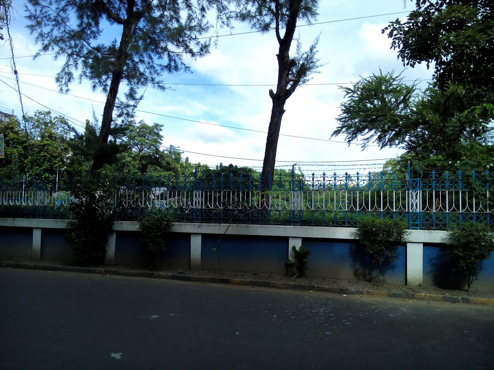
POSTCARD


Skills
Every skill is pinned to the projects where I used it. Hover or click a skill to see its threads, then click a project to open it in Work.
Selected work
CARD COLOUR
Show all projects
Thesis
Master's thesis (M.Arch, Urban Design)
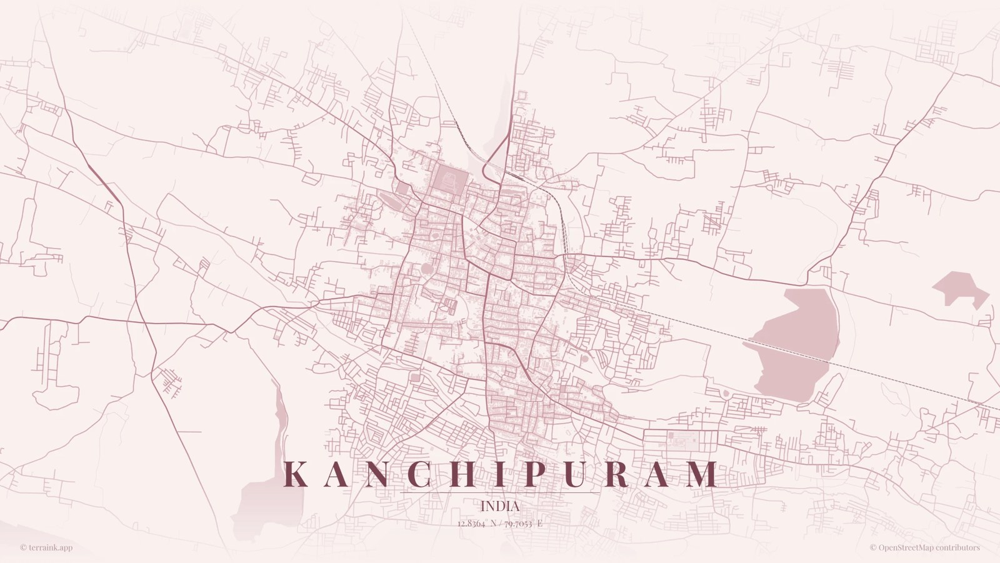
Redevelopment of a Temple Town: Kancheepuram, Tamil Nadu
Civic infrastructure and heritage conservation around Kancheepuram's temple precincts, aimed at revitalising the town as a heritage and cultural destination. Click to read more.
Current thesis, IAAC
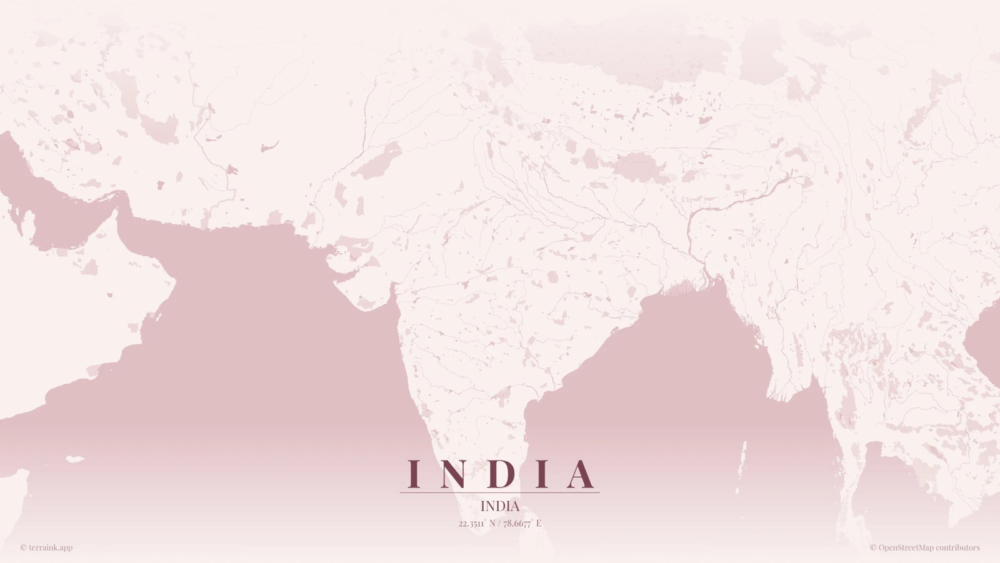
First review done, Oct 2026
Thesis defence, June 2027
In this study
Redevelopment of a Temple Town: Kancheepuram
Civic infrastructure and heritage revival in a living temple town
20 min read
PROGRAMME
M.Arch, Urban Design, Jadavpur University
PROJECT
Thesis, 2015–2016
SITE
Kancheepuram, Tamil Nadu
GUIDE
Prof. Shivashish Bose
IN SHORT
Kancheepuram is a living temple town whose two great attractions, its temples and its silk, are both under strain. Temple approaches are crowded, tanks are polluted, and handloom weavers lose three to four months of work every rainy season. This thesis reads the town layer by layer, asks the people who use it, and proposes fourteen connected interventions to make it a heritage and cultural destination again.
01The project in brief
Technology has made life easier in many ways, but a place should not lose what makes it what it is. This thesis asks whether heritage and technology can go hand in hand in Kancheepuram: a town whose heritage has to be protected, and which also needs better services and infrastructure. A city is smart only if it is technologically advanced and also protects its culture and heritage. Redevelopment, in this sense, means making a place friendlier and easier to use as needs change, in a way that lasts.
Kancheepuram is one of the seven sacred cities of India and the only one in the south that is said to give salvation. It is sacred to both Saivas and Vaishnavas, and was once also a centre of Buddhism and Jainism. It is the place where the foundations of South Indian temple architecture were laid, and where local government had its beginnings. The Kailasanathar temple, begun by Rajasimha Pallava and completed by his son Mahendravarma, is among the oldest structures in the town. The Devarajaswami temple, built by the Vijayanagar kings, keeps a ten-metre statue of Vishnu under water in its tank, which is drained once every forty years.
Aim
To develop civic infrastructure around heritage sites, leading to the revitalisation of the town as a heritage and cultural destination.
Objectives
- Provide better connectivity with the attractions, focusing on last-mile connectivity, with heritage walks, digital information kiosks and pedestrianised tourist areas.
- Provide more facilities for women, senior citizens and differently abled citizens.
- Identify heritage areas and propose their conservation where required.
- Develop proper parking places and hawker zones.
- Encourage the weaving industry and give it a centralised area.
- Facilitate the use and movement of e-rickshaws.
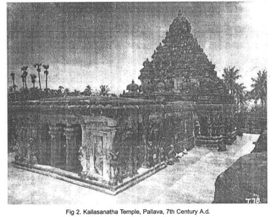
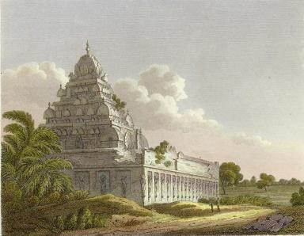
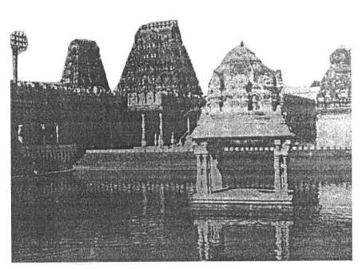
Why now
The national HRIDAY scheme (Heritage City Development and Augmentation Yojana) was launched on 21 January 2015 to bring urban planning, economic growth and heritage conservation together in an inclusive way. Kancheepuram is exactly the kind of town it is meant for.
Scope and limits
The proposals cover art, culture and traditional value, connectivity, parking and organised hawker areas, mainly near the temples. Because of the time available, the thesis does not go into detailed design of services, or an in-depth conservation proposal.
02The city and where it lies
Kancheepuram lies about 72–76 km south-west of Chennai, on the banks of the Vegavathi river, a tributary of the Palar. The land is well connected by road and rail, and National Highway 4 passes about 3 km to the north. The state government has named it one of its growth centres.
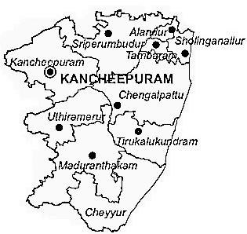
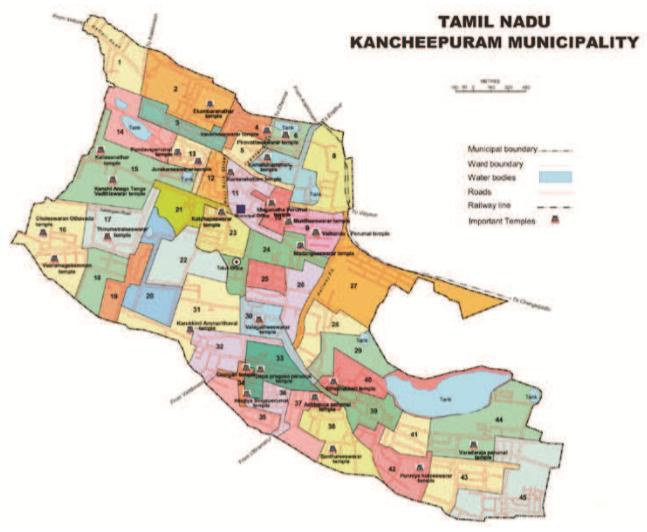
District, municipality and planning area
Kancheepuram district lies in the north-east of Tamil Nadu, bounded by Vellore and Thiruvannamalai in the west, Tiruvallur and Chennai in the north, Viluppuram in the south and the Bay of Bengal in the east. It covers about 4,400 km² with a 57 km coastline, in 12 taluks and 1,214 revenue villages.
The municipality was constituted in 1866 over 7.68 km² and has grown through grade I (1947), selection grade (1983) and special grade (2008) to its present 11.6 km² and 51 wards. The Local Planning Area adds 33 villages. Between the railway line and the Vegavathi the town is thickly residential and commercial, with small and big temples; the north and south of the planning area are mostly valuable farmland.
- Nearest airport: Chennai International Airport. Nearest port: Chennai Port.
- Nearest railway station: Kancheepuram. Bird sanctuary: Vedanthangal, 48 km away.
- Worth a visit: Kanchi Kudil, an ancient house kept as a museum.
03History and growth
Kancheepuram is among the oldest cities in South India. It was the Pallava capital from the 4th to the 9th century, and was a city of learning for Tamil, Sanskrit and Pali. From the 6th to the 8th century the Pallavas built magnificent temples and encouraged both silk weaving and Bharatanatyam. Later it passed to the Cholas, Chalukyas, Vijayanagar kings, the Muslim rulers and the British, and all of them left their stamp on the temples built over twelve centuries. The poet Kalidasa called it the best of cities (nagareshu Kanchi).
Seven stages of growth
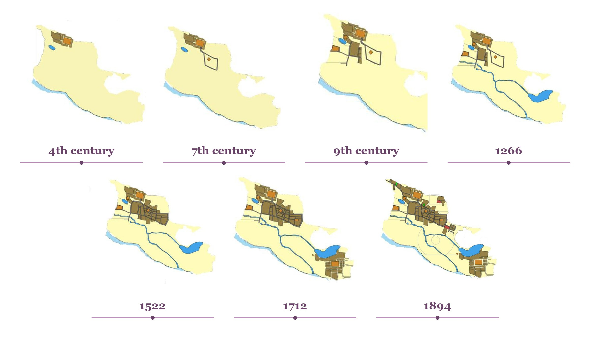
The town was laid out on the Nandivartha pattern: two or four groups of settlements with a temple or palace as the nucleus, linked by straight roads cutting at right angles, forming a cross with temples as vistas at the ends of the Rajaveedhi. Houses came up on raised ground, built of burnt brick for the first time, with a garden at the back and a wide front verandah, the thinnai. This gave good ventilation and drained rain water quickly, and can still be seen in the old parts of the city.
04Land and climate
The climate is hot and humid all year. Rain depends mostly on the north-east and south-west monsoons, and the district suffers distress when they fail. The land is flat and slopes to the south and east, with few hills in the district. Soils are mainly brown clayey (over 71% of the district), with red sandy and alluvial soils, the alluvium lying along the Palar and Cheyyar. The Palar is the main river; tanks and wells are the main sources of irrigation. Forest covers about 23,586 ha of the district.
05The silk city
Beside its temples, Kancheepuram is known for its handloom silk. Weavers settled here more than 400 years ago and gave the town its reputation for the best silk sarees in the country, which are woven with fine gold thread. More than 5,000 families work in the industry, and cooperative societies market their sarees across the state.
- The town had over 60,000 looms and 22 weavers' cooperative societies in 2004. Only 13 societies are left today, and only five of those do well.
- The master weaver typically keeps a loom in his house and the whole family, women included, helps with the work. The art of korvai is declining because these helpers are disappearing: people choose more certain and less strenuous work.
- Handloom is declining as power looms and newer materials take the market. Weavers lose three to four rainy months every year, when damp makes silk thread wet, sticky and unusable.
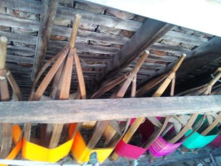
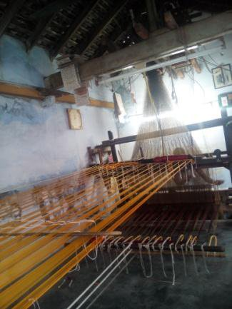
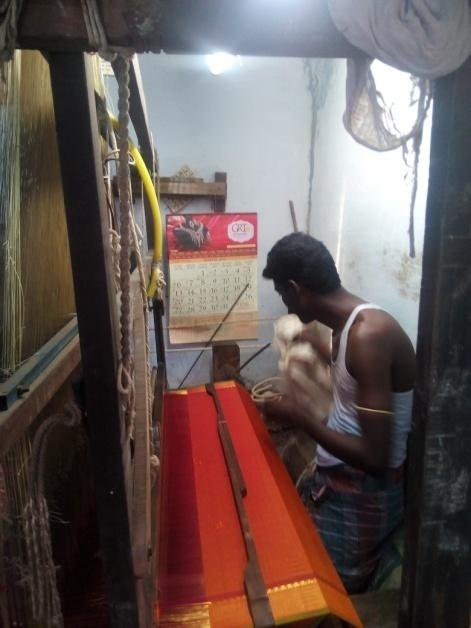
06Who lives here today
Community life in Kancheepuram is built on occupation, and every community depends on another. Silk weaving and temple revenue are the economic base of the town, which is also a centre of trade, arts and crafts, and textiles. The temples draw the tourists and bring in most of the revenue. With the decline of weaving, professionals are concerned about the town's future income.
Occupation-based settlement has survived to the present: most weavers live near the Kailasanathar temple, and clay-doll makers near the Perumal temple. But the old community-based neighbourhoods have become mixed through migration and the sale of property. The town's traditional occupations include priests, traders, potters, goldsmiths, chariot pullers, carpenters, blacksmiths, washermen and barbers, and the old separation between them is fading.
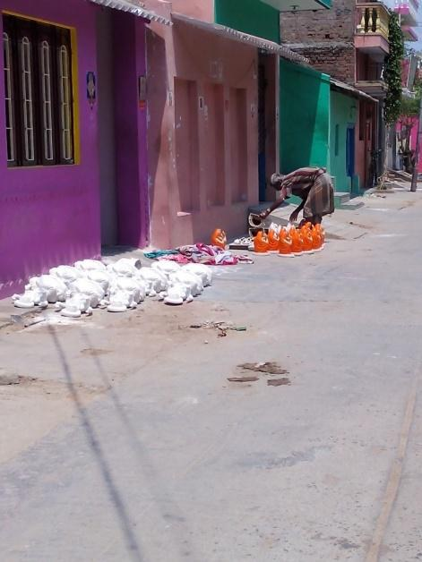
07Demographics
At the 2011 census Kancheepuram had 164,384 residents. The sex ratio was 1,005 women for every 1,000 men, well above the national 929. Literacy was 88%: 93% of men and 83% of women, up by 5% over ten years. There are 49 registered schools (16 run by the municipality), two medical colleges, six engineering colleges, three polytechnics and six arts and science colleges. The district has 39.9 lakh people, about 5.5% of the state, and Scheduled Castes and Tribes make up 3.55% and 0.09%.
| Census year | Population |
|---|---|
| 1871 | 37,275 |
| 1881 | 37,312 |
| 1891 | 42,547 |
| 1901 | 46,164 |
| 1911 | 53,864 |
| 1921 | 61,376 |
| 1931 | 65,258 |
| 1941 | 74,685 |
| 1951 | 84,810 |
| 1961 | 92,714 |
| 1971 | 110,657 |
| 1981 | 131,013 |
| 1991 | 144,955 |
| 2001 | 153,140 |
| 2011 | 164,265 |
08Tourism profile
Kancheepuram district is first in attracting foreign tourists, with a 12.03% rise in visitors from abroad in 2013. It received 805,983 foreign tourist arrivals in 2013. Visitors come from the international, national and regional level, and in the peak season they number about 10,000 people a day.
| Foreign tourists | 2001 | 2006 | 2011 |
|---|---|---|---|
| Kancheepuram | 109,389 | 182,158 | 448,443 |
| Domestic tourists | 2001 | 2006 | 2011 |
|---|---|---|---|
| Kancheepuram | 1,381,906 | 2,354,635 | 6,785,520 |
Source: International Journal of Geomatics and Geosciences, Vol. 5, Issue 2, 2014.
Infrastructure for visitors
Infrastructure is improving, but slowly. A district sports stadium is under construction, and the area around the Collectorate has better facilities. There are no shopping malls or multiplexes, and no public space that can hold a large gathering. Water bodies are unattended and unmaintained. There is no parking and there are no designated bus stops, so vehicles encroach on the roads and cause congestion. The bus stand is unplanned and hawkers take up much of the space around it.
Projects already suggested
The municipality has suggested improving the Rajaji Market and a Yatrika Nivas (pilgrims' rest house), improving the Manjalneer channel, drainage improvements for Munuswamy Mudaliar Avenue, Mamallan Nagar and the Vaikundaperumal area, and solid waste management. The thesis folds these into its proposals.
09Transport, education and recreation
Getting here. The town is most easily reached by road. NH 4 (Chennai–Bangalore) passes the outskirts, and in 2006 the state transport corporation ran 403 buses on 191 routes from the city. The Chengalpet–Arakkonam railway line runs through the town. Within the town people use public buses, autos, and their own cars and cycles. The nearest airport is Chennai, 72 km away.
Learning. Kancheepuram has long been a centre of religious education for Hindus, Jains and Buddhists. It has an Indian Institute of Information Technology, two deemed universities, and a rail construction training centre by Larsen & Toubro. Night schools were opened for children working in the silk industry.
Health and recreation. Government and private hospitals serve the town. Recreation is where it is weakest: there are no shopping malls or multiplexes, a few theatres, and no parks apart from the Anna Centenary Park. Kanchi Kudil and the temples are the main attractions.
10Layers of the town: site analysis
The thesis reads the town through a series of maps. Each carries a short inference.
Blue system
A system of tanks is the distinctive feature of Kancheepuram. Some were built for farming, some are natural, and almost every temple has one, believed to be sacred. A man-made canal is no longer maintained. Two large lakes, the Nathapettai and Vaiyavoor, lie just outside the town, and the Palar flows to the south.
Green system
Green pockets are few. Every major temple keeps its own lush open area, built with the temple and still maintained. Other greens are the Anna Centenary Park, the Collectorate ground, the District Sports Stadium and the Thanga Ammal Manickaa Pillai Garden, with open undeveloped land along the fringe.
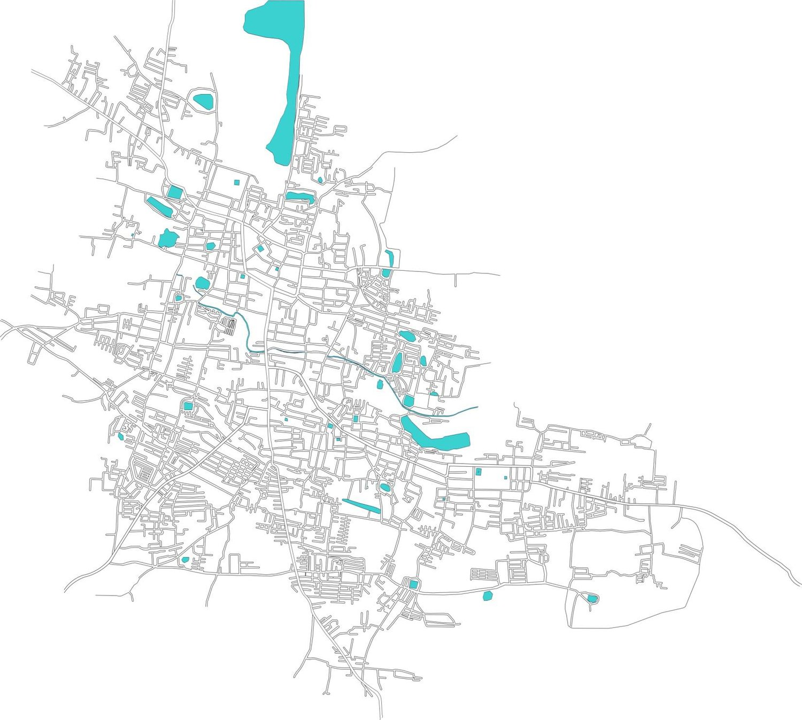
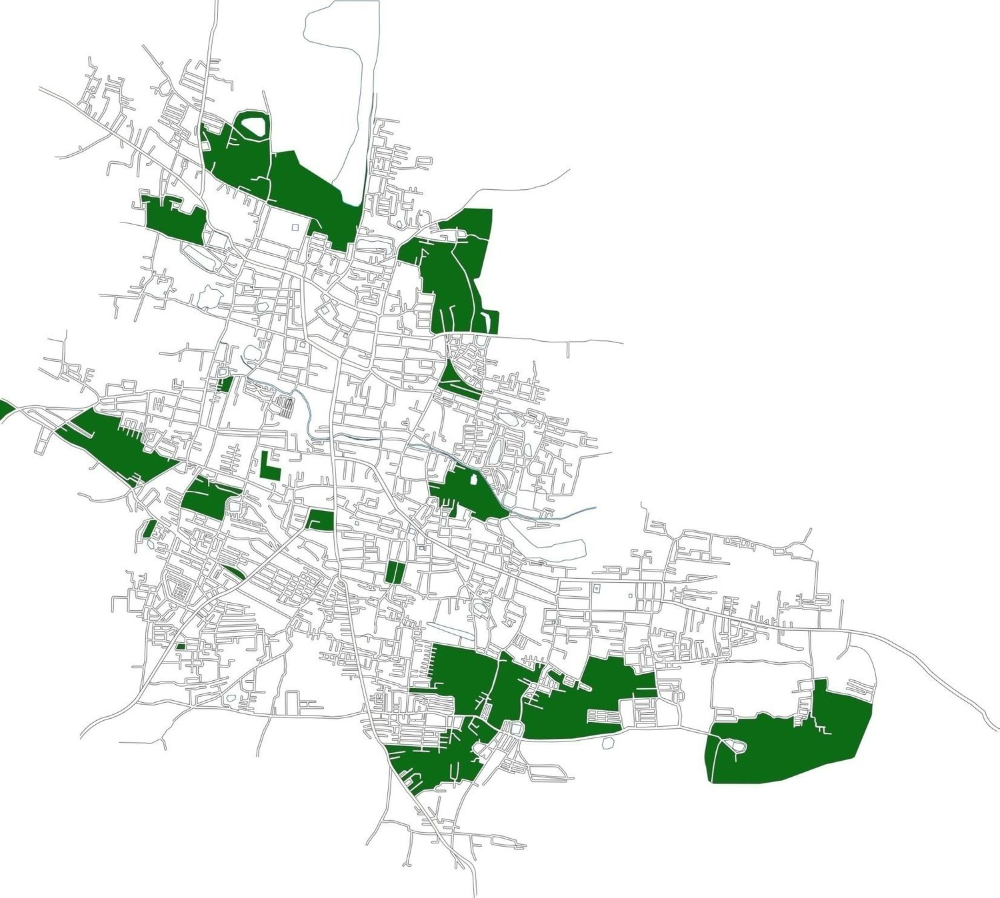
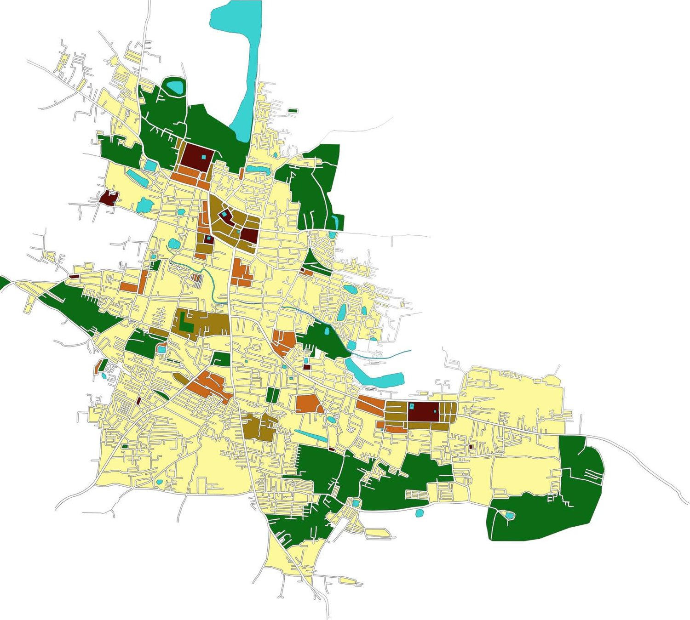
Land use
Land use is mainly residential. Commercial activity sits at the centre, along the temple car streets, Bazaar Street and the market. Government offices are on the south side. Tanks are spread across the town beside the temples, and slums are common along the tanks. Public and semi-public uses, such as temples and schools, are spread across the town, and newer residential layouts are towards the eastern edge.
Figure-ground
The built form is generally contiguous. In the old city the solids enclose the voids of the tanks, streets and canals; in the newer parts the voids hold the solids. The voids of the temples, enclosed by the solids of the traditional core, show the hierarchy of what stands inside them. The old core is denser than the later settlements, with narrower roads.
Axis and orientation
The city grew organically with the Ekambareshwarar temple at its core. There is no grand axis today; the main axis is State Highway 58. Because of the organic growth and the history of the place, the geometry cannot be changed.
Junctions
Seven junctions are important: Kailasanathar temple, Kanchapeshwarar temple, the bus terminus, Pachaiyappas school, the Perumal temple, Metutheru, and Metutheru extension.

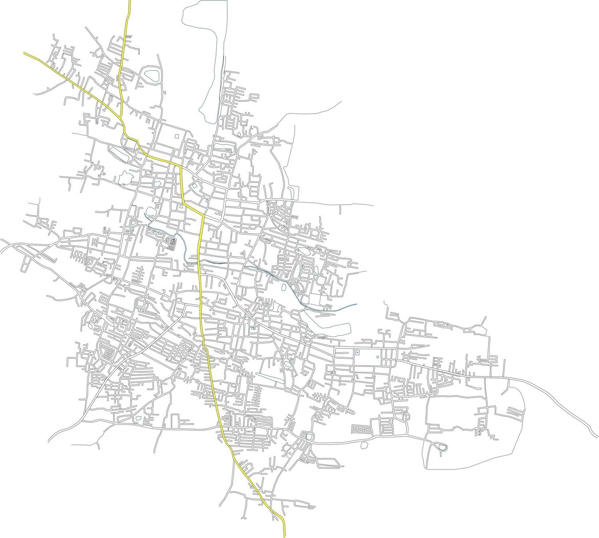
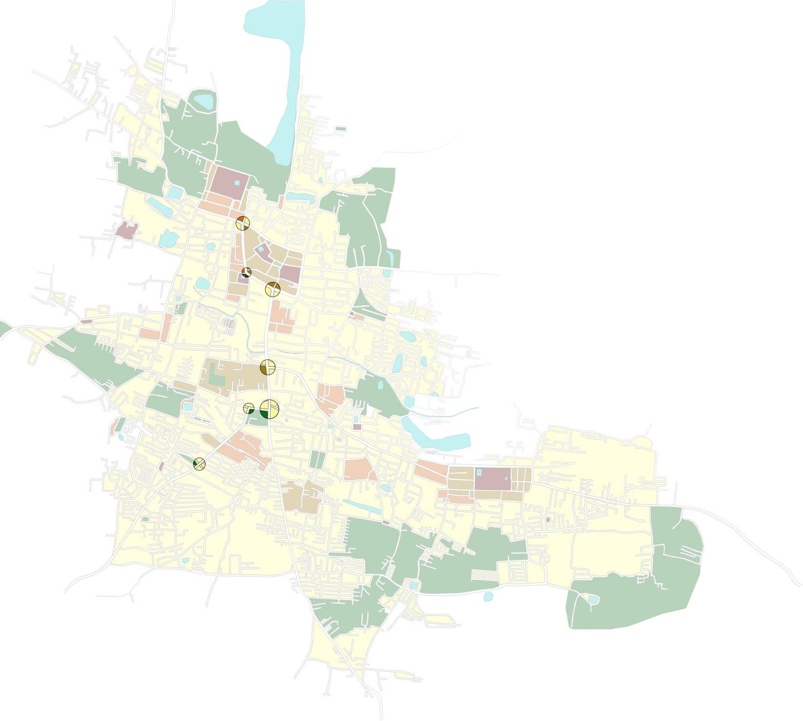
11Building use
Four areas of the town are looked at in more detail.
- Rajaveedi is the major road. It encloses the Kamakshi Amman, Kumarakottam, Ulagalandha Perumal and Kali temples. The buildings are mainly residential, as they have been since ancient times, with some commercial buildings at the temple entrances.
- Moongilmandapam sits on State Highway 58, the major traffic zone. Commercial buildings dominate along the highway, with homes set back behind them. A school stands in the area. The road connects Chennai, Chengalpet and Uthiramerur.
- The Varadharaja Perumal temple area is purely residential. Being a Vishnu temple, the area is still occupied by the families of the temple's priests. The only commercial use is hawkers; no permanent shop is seen.
- The Manjalneer Kalvai was built to bring drinking water, but it has become a drainage canal that contaminates the water storage. Homes and shops have encroached on it.
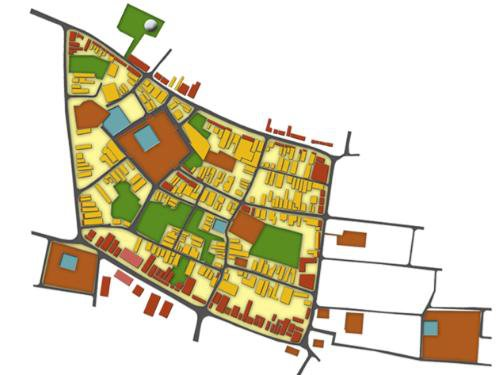
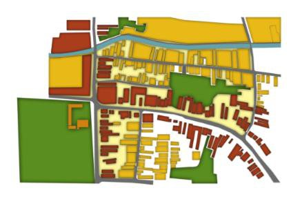
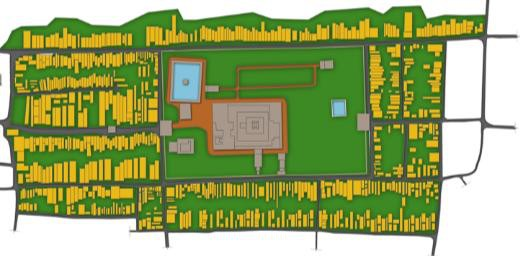
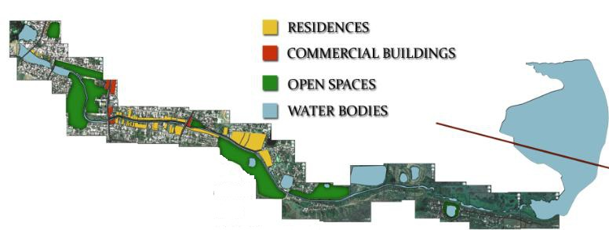
12Public realm: buses, parking and cart routes
Temporal urbanism means the temporary events of the day: daily activities, weekly markets and seasonal events such as festivals, including street vending and rituals.
- Bus stops are placed at short intervals and close to junctions, so they create traffic jams in these zones.
- Parking is a major problem. Street parking takes up most of the road, leaving little room for vehicles, and causes congestion near the temples and on the state highway. Demand is higher than the space available.
- Cart routes are the routes the temple chariots take once or twice a year for each major temple, carrying the idol of the god in a grand procession after a festival.
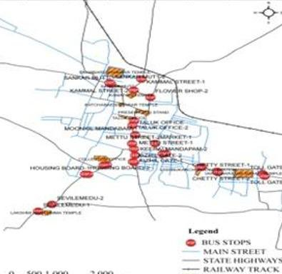
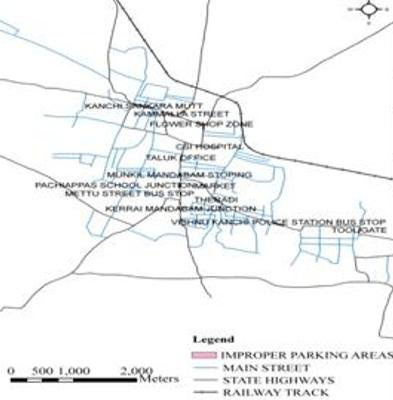
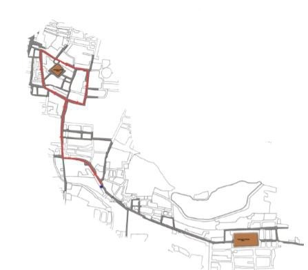
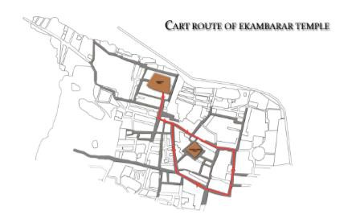
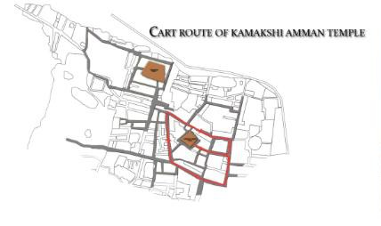
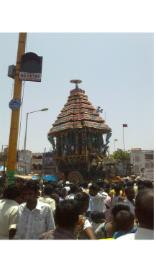
13Houses of the old town
Three house types explain how people lived in the old town. Each is shown below as plan, section, elevation and perspective.
Agraharam
Every agraharam dwelling starts from the thinnai, meant for receiving guests and passers-by. Toilet spaces are isolated from the house and placed at the end of the housing area, with the cattle shed as a barrier. The well is near the toilet.
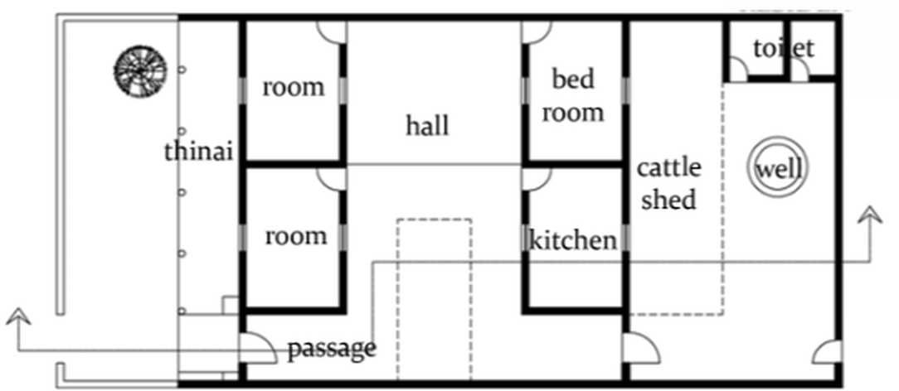
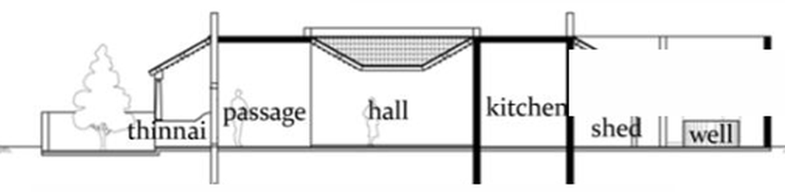
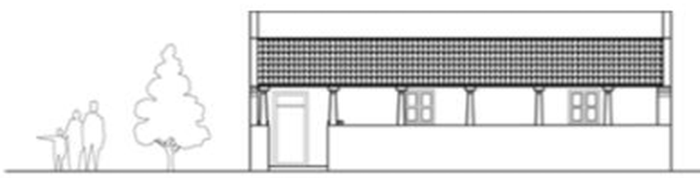
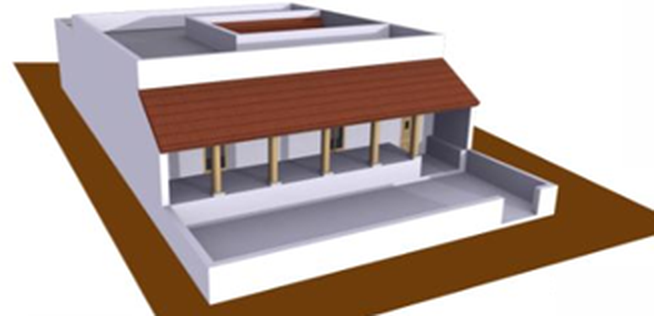
Silk weaver's house
The workplace, the silk weaving area, is at the entrance so that workers are not allowed into the home. Many windows give the weaving room maximum light. A toilet with open space separates the work room from the house.
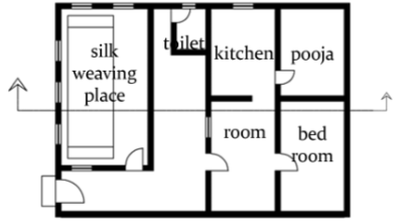
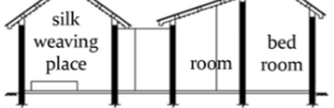
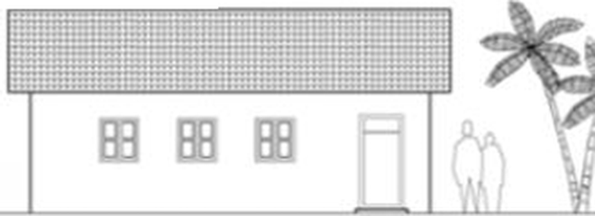
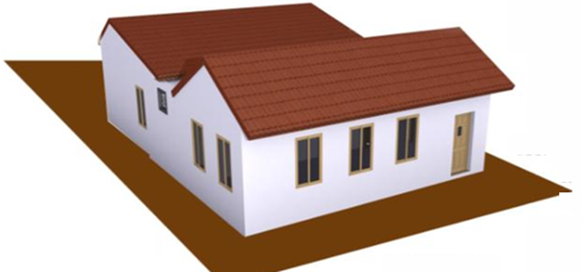
Kanchi Kudil
An ancient house on Sangeetha Vidwan Nainaar Pillai Street, kept as a museum. It shows the life of an agricultural family in a small town: courtyards, a food court, traditional crafts and string instruments, the master's room, a room for women and children, a room for the gods, verandahs and a backyard with agricultural tools.
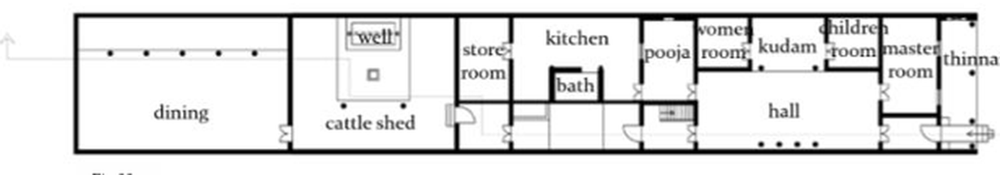
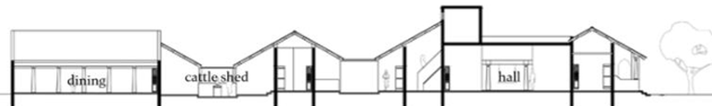
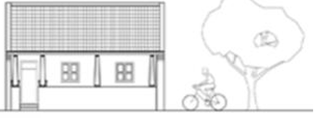
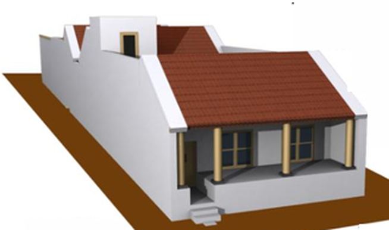
14Sanitation
Water supply
The Palar is the only river in the district and it is not perennial; for most of the year it is dry because of dams built across it in Andhra Pradesh. Ground water is heavily used in the west and south, and the east of the district is losing water level because of use for drinking. The organised supply is about a hundred years old: a protected supply was set up by the Vegavathi in 1897 for 56,000 people at 75 litres a day, and in 1961 a second source was developed in the Palar bed. The town has seven water supply zones, each fed by an overhead tank, and a ground-level reservoir near the Ekambaranathar temple.
Drainage and sewage
Kancheepuram has an underground sewerage and drainage system, which is unusual for a town of its size. It was sanctioned in 1970, when the Government of India declared the town hyper-endemic, with Rs 1.20 crore, and was designed for 1.5 lakh people and 90 MLD. The discharge today is 137 MLD. The town is divided into east and west zones, and sewage is pumped to lagoons at Tirukali Kadu, where natural treatment waters 112 acres of grass and coconuts. The system needs expansion.
The Manjalneer Kalvai is mainly the town's flood drain, and its present condition is very poor. The land slopes towards the Palar, so water from below the canal drains into the river.
Waste
A 9 MLD sewage treatment plant with three oxidation ponds was built in 1979, but poor operation left the ponds filled with sludge to about 80 cm and the plant has been abandoned since 2004. An upgrade to 14.5 MLD with waste stabilisation ponds is under way with World Bank and state funds. Textile dyeing produces hazardous waste: 2,117 units were identified, with 2,000 authorisations issued, and a common treatment site is planned in the district. About 90 tonnes of solid waste are produced every day, collected by 6 mini lorries, 6 power tillers and 10 carts, and dumped at Vaiyavur.
15SWOT analysis
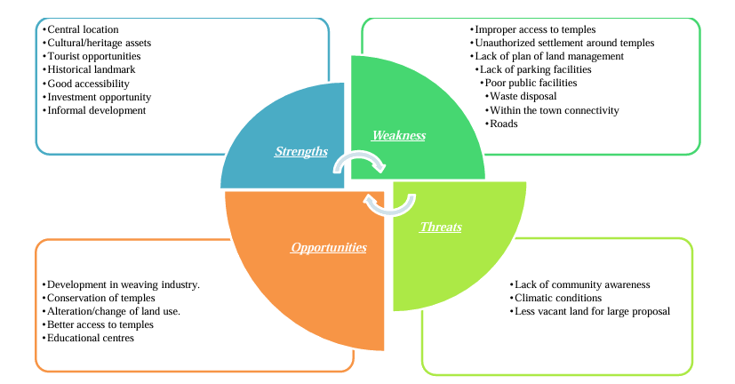
IN SHORT
The strengths are the town's location, heritage and tourist potential. The weaknesses are the daily problems of access, parking, public facilities and waste. The opportunities are the weaving industry, conservation and better access to the temples; the threats are low awareness, climate and a shortage of vacant land.
16Analogy of temple towns
Five temple towns, Srirangam, Madurai, Kancheepuram, Chidambaram and Tiruvannamalai, are compared on their location, significance, history, architecture, planning principles and urban scenario. The comparison shows that Kancheepuram, like the others, grew around its temples, but that it has no single centre: it was ruled at different times by Shaivite and Vaishnavite kings, and has several centres of social gathering.
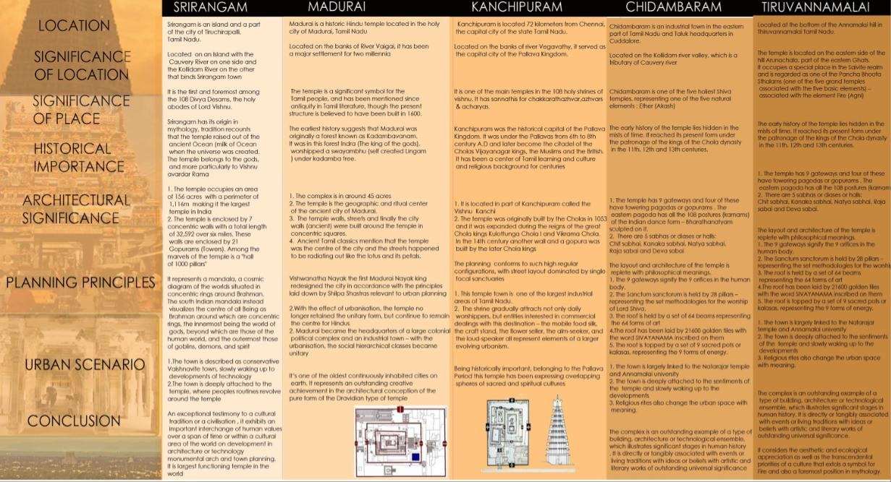
17Visual survey and field survey
A visual survey recorded the temple streets, junctions, bus stops, markets and the work of the town. An interview survey of 100 residents and visitors asked what they thought of the city, what could be improved, and what infrastructure they needed.
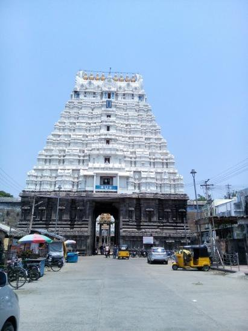
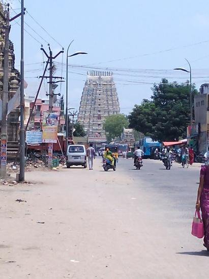
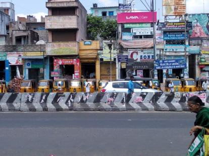
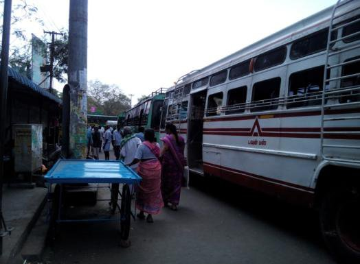
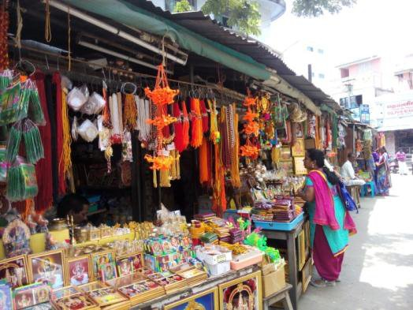
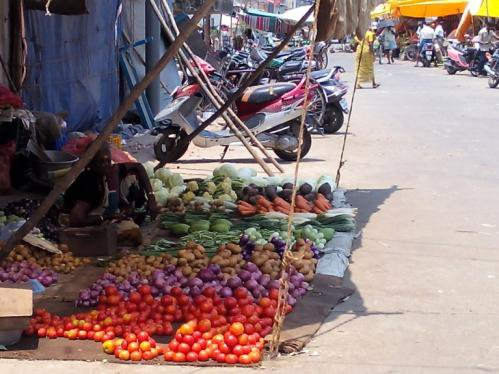
What the findings mean
Socio-economic. Temple towns in the south are usually either Shaivite or Vaishnavite, but Kancheepuram does not fit either: rulers of both sects controlled it at different times. It therefore has several centres of social gathering rather than a single epicentre, with temples such as the Varadharaja Perumal and Ekambareshwar drawing pilgrims of both sects.
Cultural. The temple complex is the cultural and economic centre of a temple town: its lawns, halls for classical music and dance, and rest areas for travellers. Temple ponds are a distinctive feature, serving as rainwater harvesting in a region with no perennial river.
Silk. Silk is the purest form of clothing in Indian tradition and is worn at weddings and auspicious gatherings. The tradition of weaving has hardly changed and is passed down through generations, in the small back lanes of the town.
18Research methods and policy
| Type | Method | Technique |
|---|---|---|
| Literature research | Analysis of historical records in books and on the internet; documents from officials | Collection of notes and data; content and reference analysis |
| Field survey and documentation | Participant observation, interaction with local people and stakeholders | Detailed questions on many aspects |
| Visual survey and direct observation | Observe and note significant aspects, take pictures of areas of concern | Photographs and notes |
| Lab research | Study and analysis of the data collected | Discussion and analysis leading to proposals |
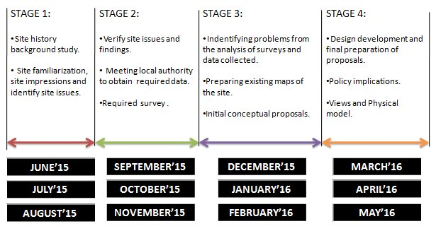
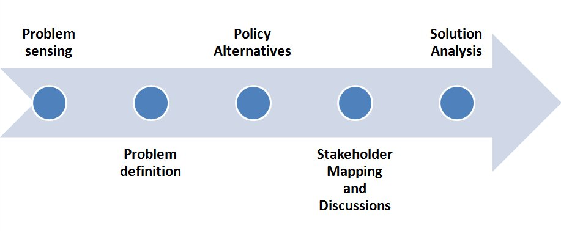
Policy approach
The proposal revolves around two centres of attraction, the temples and the silk weavers. Any redevelopment has to work on both to make Kancheepuram not only a smart pilgrimage centre but also a meeting of art, culture and traditional handicraft.
- Temples: intra-town connectivity between the temples, with mini-buses and electric buggies; a drop-and-park or drive-through system for the parking problem; planned market areas near each temple to decongest it; and temple ponds as an attraction.
- Culture and art: a cultural centre where artists from across the country can show their art, as another tourist and cultural attraction.
- Silk designing centre: where modern and traditional meet, a centre for designers and weavers to work together and put Kancheepuram silk on the global map.
19Learning from elsewhere
Chidambaram
Chidambaram, a small temple town on the Kollidam river, was chosen because it is a meticulously planned town around the Nataraja temple. It covers 4.8 km² and had 62,153 residents in 2011. Its planning follows a grid of 10 × 10 units, and the temple complex has an overall grid of 3 × 4 units, each of which is again 10 × 10. The temple is the dominant structure at the centre, and the buildings around it are limited to ground plus two floors. The temple forms a large open centre, and the fabric around it is compact, with concentric roads, becoming sparser towards the edge. Settlements are by community and occupation, and the old fabric of maths, chatrams and patashalas is turning into banks, schools and other uses.
Kazan Smart City
Kazan Smart City, in Russia, is a new city designed from scratch for about 58,800 people and 337,000 tourists a year, next to Kazan International Airport. It is meant to attract investment in high technology, medicine, education and tourism. Its design principles are eco-urbanism, smart growth, smart location, low carbon, and inclusion with identity. The thesis takes from it that smart means more than technology: it also means making a place sustainable, liveable and eco-friendly, with a strong local identity.
The thesis also summarises what a smart city is: a developed urban area that creates sustainable economic development and quality of life through its economy, mobility, environment, people, living and government. Its core elements include water, power, sanitation and waste, mobility, affordable housing, IT connectivity, good governance, a sustainable environment, safety, health and education.
20Issues
The temple town has become a locally important religious precinct, and is tending to be isolated from the larger network of temples in South India. Urbanisation has brought changes in its form, infrastructure, technology and organisation.
Conservational
- Priestly families are shifting away, and the vacant houses become godowns, so the temples lose their associated value.
- Hawkers, houses and shops crowd the temple surroundings, and approaches are chaotic because of poor vehicle and pedestrian circulation.
- Traditional house types are subdivided as demand for housing rises; new building ignores traditional character.
- The weavers' community is shrinking as the young move to other jobs.
Developmental
- A declining handloom industry and rising demand for power looms make the town a sleeping town.
- Young people migrate for education and jobs; technological and organisational skills have fallen.
- Roads of uneven width, some too narrow, make circulation and finding places difficult.
- Public awareness of the issues is low.
Environmental and ecological
- Polluted tanks are disappearing.
- Dyeing contaminates ground water and water bodies.
- Solid and sewage waste feed water-hyacinth growth.
- Land reclamation encroaches on water; pollution works at both regional and city level.
Infrastructural
- A lack of public and recreational spaces reduces community interaction.
- Temple approaches are encroached on or have become traffic jams.
- Lack of parking leads to encroachment on roads, reducing their width.
Identity
- The decline of silk means losing the identity of the silk city.
- The identity of a temple town needs to be conserved.
21Design parameters and approach
The proposals follow two ideas. The parameters are better connectivity with direct paths to the temples, heritage walks and information kiosks; core areas where vehicles are restricted and temples are the heart; and facilities such as upgraded utilities, parking and common gathering space. Scenarios include festivals, gatherings and the temple car. The approach is quality urban design: places that are productive, sustainable and liveable, with leadership and design excellence.
22Fourteen proposals
1. Conservation of heritage and temple areas
Conservation is treated as a multi-dimensional, dynamic process that is oriented to process, not product. First establish the significance of each monument or site, then lay out the approach to match. Ten methods guide it: maintenance, respect for documentary evidence, for the original fabric, for the original location and for the building's history, reversibility, legibility, respect for historic material, the role of indigenous craftsmanship, and a multi-disciplinary approach.
2. Heritage walk
Temples are connected on foot and by e-autos or rickshaws. Organised hawkers sit on one side and kiosks and information centres on the other, along a paved walk. A footbridge crosses a water body, with a public space around it. The walk connects about seven major temples, and the road is widened to a standard width where it is irregular.
3. Weavers' centre and wastewater treatment
A centralised, air-conditioned centre keeps weavers at work through the rainy months and brings the community together, so it can exchange ideas for other silk products such as kurtas and bags. The wastewater proposal answers the problem of dyeing: 10–50% of dyes are lost in washing baths and end up in effluent, and no treatment is cheap and complete, so a combination of filtration, biological and separation methods is proposed.
4–6. Parking, hawker zone and Rajaji Market
Parking is solved by setting aside streets wide enough to hold parking within every square kilometre, with valet and smart parking that senses spaces in real time, guides drivers to a free spot, and cuts congestion and emissions. Hawkers, who now block the roads near the temples, get an organised zone so vending becomes a boon, not a hindrance. The Rajaji Market is redeveloped.

7–9. Temple tanks, height of buildings and bus stops
The temple tanks, which have been part of the temples since their birth, are rejuvenated. Buildings near a temple may not equal or exceed the height of its gopuram, to protect the skyline and the view, and a few buildings that are taller than the gopuram now block it. Bus stops are designated and designed, because buses now stop wherever it seems right and block the road.

10–11. Manjalneer Kalvai and the Ekambareshwarar approach
The areas around the canal, which are now in poor condition, are redeveloped as parks and public space. The approach to the Ekambareshwarar temple is cleared of encroachments, with parking and hawkers organised.
12–14. Educational hub, cultural centre and arts centre
An educational hub, as Kota is for coaching, can raise the town's income and make it a centre of learning without bringing in industry that would clash with its character. It includes a silk-weaving learning centre with courses on producing designs. A cultural centre teaches the art, dance and music of the South, so they are not forgotten, and an arts centre completes the cluster.
23Conclusion
The thesis concludes that an old heritage town still has a lot of potential, and that with proper policy and design it can become a far better place to live. The key design vision was to increase tourism while meeting the other issues, and the urban design issues and considerations were agreed in general, although people gave them different priorities.
Speaking to the people who live there was as useful as any map: it showed the town's problems from the user's side, and the way people think about heritage and culture. The town is technologically behind other cities yet sustaining, and that is its speciality. When properly planned and designed, its rich heritage can lead to modernity that blends with the existing culture and leaves it intact.
A few matters were left undiscussed for lack of time. Who will manage the monuments in future, municipalities or private agencies? The revival of weaving depends heavily on government policy. And as population grows and people migrate out, built heritage is encroached on, a problem planners will face when smart-city conversion arrives.
24Credits and sources
AUTHOR
Janani Ranganathan
PROGRAMME
M.Arch, Urban Design, Jadavpur University
GUIDE
Prof. Shivashish Bose
YEAR
2015–2016
All maps, plans, drawings and photographs are from the thesis report Redevelopment of a Temple Town: Kancheepuram, or from the sources it credits.
Main sources. Kancheepuram Local Plan and Master Plan 2011; Operations Research Group (1999), Integrated Development Plan for Heritage Areas in Tamil Nadu, Kancheepuram Town; Carl, Dallapiccola, Michell and Nanda (1998), Kancheepuram: Art, Architecture and Urbanism, Cambridge; Priya (1998), Kancheepuram: Manifestations of a Traditional Setting, NIT Trichy; Census of India 2011; Indian Journal of Geomatics and Geosciences (2014); TWAD Board; CPCB; Smart Cities Mission; HRIDAY guidelines.
In this study
Wing It
A microclimatic corridor that turns a Barcelona street into a climate shelter for butterflies and other non-human city dwellers.
6 min read
PROGRAMME
IAAC, Master in Advanced Urban Planning and Data Analytics
PROJECT
Group project, IAAC, 2026
SITE
Jardins de Montserrat and Carrer de Rocafort, Barcelona
SKILLS
Urban analytics, GIS, Photoshop
IN SHORT
Barcelona is getting hotter and its butterflies are in decline, yet the streets between its green spaces offer them no shade, no moisture and no place to lay eggs. Wing It extends the climate comfort of Jardins de Montserrat into Carrer de Rocafort through permeable ground, layered planting, a year-round food calendar and shared shelters at the junctions, so that the street works for butterflies, residents and the city at once.
01Why it matters
Barcelona's climate is changing. Temperatures rise, drought periods lengthen, and plants suffer water and heat stress. Vegetation loses vitality, habitats degrade and ecological processes are disrupted. There are few spaces where species can survive these new conditions, and butterflies are among those hit hardest: 57% of butterflies are reported to be in decline.
That makes them an indicator species for environmental stress, and a good way to ask a wider question about how we design cities for more than humans.
Butterflies are an indicator species: when they decline, the city's habitat is under stress. Asking how a street can shelter them is a way of asking how it can cool and connect for everyone.
02What a climate shelter is
A climate shelter is a spatial intervention that protects living beings from extreme climatic conditions, particularly heat, through shade, vegetation, ventilation, water retention and other cooling strategies. Shelters range from small urban installations to large ecological and mobility infrastructures; the Cheonggyecheon Stream restoration in Seoul and the Polinature structure by Ecosistema Urbano are two examples we looked at.
For a butterfly, the idea is a gradient. Open ground in full sun is not ideal. A dense, multi-layer canopy acts as a buffer: its shade lowers the temperature and shelters from strong wind. At the cool core, permeable surfaces, shrubs and an understory layer create a microhabitat and microclimate, with a few man-made shelters on tree bark for hibernation.
03Who it has to work for
A street shelter only works if three parties can live with it.
THE BUTTERFLY
Needs host plants, permeable soil, flowering plants, and to be left undisturbed.
RESIDENTS
Need shade and cooling, accessibility, safe crossings and green space.
THE CITY COUNCIL
Has an agenda of emergency lane access, maintenance and the Superilla policy.
The tensions between them became the design drivers. Foot traffic and maintenance disturb butterfly life cycles. A biodiversity corridor, though, aligns with the city's climate strategy; the Superilla framework resolves the mobility conflict; and community use validates the public investment.
04The site
The site is Jardins de Montserrat and the streets around it: Carrer de Rocafort, Carrer d'Entença, Carrer del Rosselló, Carrer de Còrsega, Carrer de Calabria and Carrer de Provença. The park holds a horticulture centre, a youth centre, a recycling centre, a children's park, a dog park and a table-tennis and cycle area for kids. It sits inside Barcelona's Superilles framework, which reorganises mobility to give street space back to pedestrians and greenery, with a park or green corridor within 200 m.
From a butterfly's point of view the diagnosis was blunt. There are flowers here, but no place to lay eggs. Too much sun, too much exposure. And beyond the park: I can't cross these streets. Too hot, too exposed, no place to stop. What's green here doesn't connect.
We walked the site and recorded fifteen observation points across the park and its streets, noting shade, surfaces, planting and who was using each place. Taken together they describe a site of fragments:
- The open centre of the park has little shade and little vegetation. It may host cultural events, but it was empty at 1 pm and extremely hot.
- The flowering patches are small and found mainly at the nodes. Bees, wasps and flies gathered on those specific plants, and a group of flies hovered in the zone between ground and canopy.
- The shaded edges are cooler: one area is cooler with shade and water but dominated by a single bird species (pigeons), with fewer flowering species and more groundcover. A drinking-water facility sits close by.
- The children's park relies on tree canopy that gives no shade from autumn to winter, and was hotter than other areas around noon.
- The lowest point of the park, where water drains out from both ends, has a higher share of non-permeable surface, a large gap with no trees or urban infrastructure, and no shade near the benches.
- The streets vary. One has canopy shade over most of its width and is noticeably cooler, with parrots collecting twigs; another has street parking, maximum shade and a cooler environment; others have no trees or shade in most of the area and mostly non-permeable pavement.
- Small signs of the microclimate: a sudden gust of wind at one point, dry leaves used as groundcover where there is little artificial water, and the space between a tree's branches used as storage for junk.
The Superilla frame
Green axes with pedestrian priority. Every home has access to a park or green corridor within a maximum of 200 metres. Green axes (streets) are calm streets, prioritised for pedestrians, with places to stay, more greenery, and spaces for socialising, play and enjoyment. Squares appear at the intersections of the axes: they are turned into comfortable places to stay, with more greenery and a children's playground.
From a butterfly's point of view the site is a set of fragments: flowers with nowhere to lay eggs, green that does not connect, and surfaces that hold heat.
05The butterflies
Public records from GBIF show ten species around the site. The Red Admiral is the most recorded (136 records), followed by the Geranium Bronze (75), Speckled Wood (69), Wall Brown and Small White (56 each), Old World Swallowtail (52), Painted Lady (51), Cleopatra (32), Clouded Yellow (28) and Large White (17).
A butterfly is an eating machine that becomes a flying adult. Its life is only 6–12 months, and most of that is spent as an egg, caterpillar or pupa. Resident species overwinter as eggs or larvae, hiding in leaf litter or as chrysalises. Only the migrants travel, and only as adults: they head to North Africa and sub-Saharan Africa in autumn and return in spring, and no single butterfly completes the round trip.
So each stage needs something different from the street: warmth, host plants for the caterpillars, nectar for the adults, shelter, and above all no disturbance. We matched host and nectar plants to each species (nettle, lavender, thyme, wild fennel and mastic tree among them), and chose trees that meet Barcelona's tree master plan for 2017–2037: low maintenance, drought resistance, canopy coverage, species diversity, and tolerance of pollution and compaction.
Reading the pattern month by month:
- March: peak abundance, which may point to good conditions and nectar availability.
- June to August: high temperatures may reduce activity, change feeding patterns, or push butterflies toward cooler microhabitats.
- July: abundance stays elevated despite the heat, which suggests resilience or the timing of life cycles.
- October: a second population peak, which may reflect autumn flowering.
Overall, butterfly abundance is sensitive to seasonal temperature shifts and to the availability of habitat resources.
The species research also names the plants these butterflies rely on, from common nettle, lavender and thyme to wild fennel, wild marjoram, common mallow, mastic tree, Mediterranean buckthorn and olive, alongside mustard-family ruderals, lucerne and bird's-foot trefoil. Some of these plants are native, some are ornamental or invasive, and the design uses that knowledge to choose what goes in each patch.
06Reading the site
We read the site as an ecological system, not just as public space: its vegetation, the species recorded there, how much of the ground can absorb water, and how much heat its surfaces take in. The picture is of fragments. Existing green areas give local refuge, while large impermeable surfaces hold heat and limit habitat.
Heat is the hardest constraint. A butterfly cannot fly above about 40°C; it shuts down and hides, and without shade or moist soil it dies. A solar-radiation model of the site, in kWh/m² over a year, puts the hot spots at the open junctions and paved areas, with the treed park noticeably cooler.
Butterflies cannot fly above about 40°C. Without shade or moist soil they die, so the hot spots at the open junctions are where the street fails them most.
07The design
The objective: create a microclimate that serves as a climate shelter for non-humans, with spatial and microclimatic conditions that support butterfly populations by reducing thermal stress, increasing moisture retention and allowing habitat to continue from one patch to the next. Six strategies shape it:
- Connections. Place species so the habitat forms one continuous corridor.
- Butterfly life cycle. Support pollinators with food, shelter and habitat.
- Human and non-human balance. Use buffers so both can coexist.
- Canopy layers. A distinct vertical structure for shade, cooling and biodiversity.
- Climate shelters. A network of shaded rest and cooling spots.
- Surface variation. Mix permeable and non-permeable surfaces to manage water, comfort and biodiversity.
These turn into eight guidelines:
- Thermal sinks. Excavate unused asphalt inside the green patches and replace it with highly permeable organic topsoil, topped with a deep layer of native mosses and low groundcover.
- Dual-species canopy layering. A high canopy of large-leafed trees (such as the London plane) paired with a mid-story flowering or host tree (such as Judas tree or Mediterranean buckthorn).
- Wind-buffering borders. Dense, low, wind-resistant shrubs along the edges that face open street voids.
- Life-cycle green patches. A 50/50 mix of larval host plants and flowering nectar plants, matched to the target species.
- Coexistence shelters. At major junctions and wider nodes, concentric shelters: a shaded human resting zone wrapped around a protected non-human core.
- A continuous food calendar. Sequence the flowers in each patch so blooming overlaps across all four seasons and no food gaps remain.
- Urban infrastructure immunity. A zero-intervention buffer around building entrances, underground parking ramps, public benches and restaurant terraces, so everyday life is never blocked.
- Solar basking stones. Clusters of large, flat, dark natural stones in the sun-exposed margins of the patches.
The design protects what is already there: every entrance, ramp, bench and terrace keeps a zero-intervention buffer, so the corridor never blocks everyday life.
08The street
The plan starts by protecting what people already do there. We mapped every entrance (banks, shops, apartment doors, cafés, underground parking), the vehicle openings, the restaurant seating and a dedicated pedestrian pathway. What remains becomes the space for the corridor: planters, then three vegetation layers, from forest-layer planting through understory and medium canopy trees to large emergent trees, with climate shelters at the junctions.
09What it achieves
- Permeable surface: from 34% to 62%, almost double.
- Urban heat: total annual absorbed heat falls from 1,296,000 kWh to 1,181,700 kWh, about 9% less.
The street stops being only a way through and becomes a place where a butterfly can eat, lay eggs, shelter and move on, and where people can sit in the shade beside it.
Permeable surface almost doubles, from 34% to 62%, and total annual absorbed heat falls by about 9%.
10Credits and sources
A group project at IAAC, 2026.
Data and references: Ajuntament de Barcelona (Atlas of Biodiversity, Superilles, Open Data BCN, the climate shelters network); GBIF; the Urban Butterfly Monitoring Scheme and Catalan Butterfly Monitoring Scheme; CREAF and the Catalonia Natural Heritage and Biodiversity Observatory; Meteoblue; UN ESCAP on climate shelters; Taron (2013), Chicago Academy of Sciences, on where butterflies go in winter.
In this study
Sand Matters
Detecting sand mining from space, and closing the gap between who can see it and who can act.
7 min read
PROGRAMME
IAAC, Master in Advanced Urban Planning and Data Analytics
PROJECT
Group project, IAAC
Investigative Methodologies, 2026
STUDY SITES
Dwarakeswar River, West Bengal
Ken River, Uttar Pradesh
SKILLS
GIS, Remote Sensing, Python, Earth Engine, YOLO
IN SHORT
Sand is the physical basis of India's urban growth, and rivers are where much of it comes from. India's mining governance is split so that the body that can see mining from space has no mandate over sand, and the bodies that can act cannot see it. Sand Matters is a satellite platform built into that gap. A user draws a stretch of river, and it returns a confidence-scored map of likely mining, backed by an object-detection check. We tested it on two rivers, and on the Ken it matched 83% of the area an independent report had measured.
01Why sand matters
India is urbanising fast. Roads, housing and infrastructure are going up at scale, and construction demand keeps accelerating. Sand is a primary ingredient of concrete, which makes it the physical basis of urban growth. River sand is especially prized because it is fine-grained, cheap and ideal for concrete, so this project looks at riverbed mining.
The most intensive extraction is in the Ganga-Yamuna basin and other major river systems, in states including Uttar Pradesh, Bihar, Madhya Pradesh, Rajasthan, Maharashtra, West Bengal, Tamil Nadu, Kerala and Andhra Pradesh.
Pulling sand out of a river does not stay in the river. Each stage of the supply chain, from extraction and transport to stockpiling, processing and end use, touches the environment:
- riverbed incision and groundwater depletion
- muddier water and loss of aquatic biodiversity
- changes to the floodplain, and erosion of deltas and coasts
- higher flood risk, air and dust pollution, and loss of riverside habitat
The core challenge: mining is spatially dynamic, hard to see from the ground, and spread across large river systems. Monitoring it needs to scale. So the question became: can we detect sand mining remotely?
02The governance gap
Extraction is allowed, and it is regulated. The questions that matter are who regulates it, where it usually happens, and who is affected. India has a full regulatory structure for mining on paper:
- MMDR Act, 1957 sets the law.
- MoEF sets national guidelines and grants environmental clearance.
- State governments grant leases and collect royalties.
- NGT and the Supreme Court act as external enforcement watchdogs.
- District Level Committees and District Survey Reports map safe extraction zones and replenishment rates.
On the monitoring side, the Ministry of Mines works through the Indian Bureau of Mines (IBM). IBM is the technical regulator that approves mining plans, but only for major minerals; it has no direct jurisdiction over sand. IBM did build the Mining Surveillance System (MSS) with BISAG-N and MeitY, a satellite-based monitoring system with a citizen reporting app. It was developed to detect mining of major minerals such as coal, iron and copper. Extending it to minor minerals such as sand and stone was only proposed in 2025.
The body that can see mining from space has no mandate over sand; the bodies with the mandate cannot see it. Sand Matters is built into that gap.
03Where we intervene
Sand Matters sits directly in that gap and connects what was disconnected. For the first time, the body that can see and the body that can act look at the same data.
STATE GOVERNMENT
Enforcement trigger. A district collector gets a flagged zone with a confidence score and can send a field inspection without needing satellite capacity.
NATIONAL GREEN TRIBUNAL
Petition evidence. A report tagged VALIDATED carries scientific standing in tribunal proceedings.
DISTRICT SURVEY REPORTS
Safe-zone data. The disturbance maps feed what DSRs are already meant to produce but cannot yet do at scale.
CITIZENS AND EXPERTS
Report and validate. People on the ground can report suspicious sites; institutions can add and cross-check data.
04The platform: Sand Matters Studio
We built the idea as a working website, Sand Matters Studio ("Sand Mining Intelligence"). It has a public-facing forum that explains the impacts, and an interactive console where a user draws a polygon on the map, sets a month, a date range and a sensitivity, and runs the detection. The result appears beside the map as spectral layers and YOLO object detections, with three outputs:
- A map layer of flagged zones coloured by confidence, with optional detection boxes, the river channel and its floodplain buffer.
- A PDF report with the site, landscape profile, thresholds used, area per confidence tier, a yearly time series, a plain-language method summary and caveats.
- Raw rasters (GeoTIFF) of each index change map, the binary disturbance mask and the confidence layer.
A user draws a stretch of river and gets back a confidence-scored map of likely mining, a PDF report and raw rasters, with every result tagged validated, unvalidated or conflict.
05How it works
Mining rarely shows up as one clear marker. It leaves three traces on a river, and the platform reads all three:
Nine stages turn a drawn area into a validated map. In plain language:
- User input. Draw an area or drop a point, then pick a month, the years and a sensitivity (low, medium or high). The system builds a 2 × 2 km analysis box around it.
- Landscape context. It checks aridity, land cover and baseline vegetation and adjusts how strict the detection should be, because the same number means different things in different landscapes.
- Imagery. It pulls cloud-masked annual composites from Google Earth Engine (Landsat or Sentinel-2) for the same month each year, so seasonal change and monsoon flooding are not mistaken for pits.
- Indices. It computes change in four indices: NDVI (vegetation), BSI (bare soil), MNDWI (water) and NDBI (built-up surfaces, used only to exclude).
- Masks. Five filters: the river floodplain (a 500 m buffer), built-up areas, cropland, a persistence filter, and a pit-water check. The persistence filter keeps a pixel only if it stays disturbed across two or more time steps: seasonal farmland recovers within 60–90 days, mining does not.
- Adaptive thresholds. Cut-offs are set from each site's own baseline (mean ± n × standard deviation). A pixel is flagged by vegetation stripping (NDVI falls while BSI rises) or by pit-water emergence (MNDWI rises on land that was dry).
- YOLO detection. In parallel, a YOLOv8s model looks for pits, haul roads and trucks. It was trained on 88 annotated image chips from four Indian river sites. It confirms what the spectral analysis finds and is not the primary detector.
- Output. The map, report and rasters described above.
- Validation flag. Every result is tagged validated (cross-checked against an independent reference), unvalidated (no reference exists, model output only) or conflict (the model contradicts the reference, so manual review is needed).
Under the hood
Here is the platform stage by stage, for anyone who wants the full logic.
1. Inputs and sensitivity
| Input | Format | What the system does |
|---|---|---|
| Location | Coordinates, place name, or a drawn polygon | Finds the river and basin (HydroSHEDS) and builds a 2 × 2 km analysis box around the point. The box is at most 400 ha; the area actually analysed is smaller, because the river buffer in stage 5 clips it. |
| Month | One month, January to December | Uses that same month in every year of the date range, so the comparison is like for like. |
| Date range | Start year to end year | Checks the Earth Engine imagery inventory for that month. |
| Sensitivity | Low, medium or high | Sets the base multiplier n_base to 2.5, 2.0 or 1.5. |
2. Choosing the month
The platform suggests a month for the climate zone: one with the least cloud and no active monsoon flooding, so that composites are built from the most clear images and the water signal reflects excavation pits, not seasonal flooding. Users can still pick any month. If a year has fewer than three clear observations in the chosen month, it is flagged low-confidence.
| Climate zone | Example regions | Recommended months |
|---|---|---|
| Semi-arid, central | Bundelkhand, Deccan Plateau | October–November |
| Humid, eastern | West Bengal, Odisha | November–December |
| Arid, western | Rajasthan, Gujarat | December–January |
| Sub-humid, northern | Indo-Gangetic Plain | October–November |
| Humid, southern | Kerala, Tamil Nadu | January–February |
3. Reading the landscape first
Before any imagery is pulled, three datasets describe the place: how dry it is (aridity, CGIAR, 1 km), how green it is (baseline NDVI) and what covers the ground (ESA WorldCover 2021, 10 m). Each adjusts the sensitivity, because how far a pixel must change before it counts depends on how noisy the landscape is. The result is n_adjusted = n_base + aridity + NDVI + land cover.
| Factor | Class | Adjustment to n |
|---|---|---|
| Aridity | Hyper-arid or arid (Rajasthan, Kutch) | −0.3: the signal stands out clearly |
| Semi-arid (Bundelkhand, Deccan) | 0.0: baseline | |
| Humid or sub-humid (West Bengal, Kerala) | +0.4: a wider noise floor | |
| Baseline NDVI | Below 0.2, sparse vegetation | −0.2 |
| 0.2 to 0.5, moderate | 0.0 | |
| Above 0.5, dense | +0.3 | |
| Land cover | Bare or sparse | −0.2: low background noise |
| Cropland | +0.3: seasonal tillage raises the bare-soil noise floor | |
| Shrubland or grassland | 0.0 | |
| Herbaceous wetland | +0.4: the most variable water signal |
| Site | n_base | Aridity | NDVI | Land cover | n_adjusted |
|---|---|---|---|---|---|
| Ken River (semi-arid, sparse) | 2.0 | 0.0 | −0.2 | −0.2 | 1.6 |
| Dwarakeswar (humid, cropland) | 2.0 | +0.4 | +0.3 | +0.3 | 3.0 |
The same sensitivity setting asks nearly twice as much deviation on the Dwarakeswar (3.0) as on the Ken (1.6). That is the platform adapting to a humid, cropped landscape that is noisier than a dry, sparse one.
4. Imagery and indices
Imagery comes mainly from Sentinel-2 (10 m, surface reflectance) through Earth Engine, with Landsat 8/9 (30 m) as the fallback for dates before 2017 or cloudy periods. Clouds and shadows are masked, and for each year the platform takes the median of all clear observations in the chosen month, so persistent changes remain and noise fades. At least three clear observations are required. Four indices are then computed, and each change map is the final-year composite minus the baseline-year composite.
| Index | Formula | What it detects |
|---|---|---|
| NDVI | (NIR − Red) / (NIR + Red) | Vegetation present, and vegetation lost |
| BSI | ((SWIR + Red) − (NIR + Blue)) / ((SWIR + Red) + (NIR + Blue)) | Bare soil and exposed sand |
| MNDWI | (Green − SWIR) / (Green + SWIR) | Water, including water in excavation pits |
| NDBI | (SWIR − NIR) / (SWIR + NIR) | Built-up surfaces, used only to exclude them |
5. Five masks
Each mask narrows the candidate pixels in turn.
- Floodplain. A 500 m buffer around the river (800 m for braided channels): river sand is only mined where the river is.
- Built-up. Pixels where NDBI rises by more than 0.10 are removed. Construction shares the bare-soil signature of mining, but mining does not raise NDBI.
- Cropland. ESA WorldCover cropland is removed as a first pass. This is approximate, so farmland on the river margin may survive and is handled by the next mask.
- Persistence. A pixel stays only if vegetation loss or bare soil lasts across two or more time steps. Seasonal farmland recovers within 60–90 days; mining does not. This is the most important filter in the stack.
- Pit water. Pixels flagged by the vegetation arm are checked against the water signal, which strengthens confidence and filters remaining farmland false positives.
6. Thresholds and confidence
Cut-offs come from each site's own baseline, not from a national number: NDVI threshold = mean − n × standard deviation; BSI and MNDWI thresholds = mean + n × standard deviation, with n the adjusted sensitivity. Two detection arms then run. Arm 1, vegetation stripping: NDVI falls while BSI rises. Arm 2, pit water: MNDWI rises on land that was dry at baseline. A pixel triggering both is a stronger signature than one triggering one, so the platform grades confidence by how many arms fire.
| Confidence | Condition | Meaning |
|---|---|---|
| High | Both arms triggered | Vegetation stripped and pit water present: the strongest mining signature |
| Medium | One arm triggered | A partial signal. Likely mining, but field verification is recommended |
| Low | Neither arm, but an index is close to its threshold | A weak signal: early-stage disturbance, or a marginal false positive |
On the Ken, the vegetation arm dominates; on the Dwarakeswar, the pit-water arm does. The three tiers capture both kinds of site without overclaiming certainty where only one signal is present.
7. The object-detection layer
A YOLOv8s model runs in parallel, and only on image chips cut from zones the spectral stage has already flagged. This keeps compute low and cuts false positives from running detection over irrelevant land. It looks for pits, haul roads and trucks, uses 640 × 640 px chips from Sentinel-2 or Google Earth (higher resolution for trucks), and was trained on 88 annotated chips from four Indian river sites. It confirms; it does not lead. A flagged zone that also holds a detected pit or haul road carries stronger evidence and is promoted in the map display.
8. What the user gets
MAP LAYER
Flagged zones coloured by confidence (red high, amber medium, yellow low), optional detection boxes, the river channel and 500 m buffer, and the analysis box.
PDF REPORT
Site and river, landscape profile, n_adjusted and all three thresholds, hectares per confidence tier, a yearly time series, a plain-language method summary, and caveats.
RAW RASTERS
GeoTIFFs of each index change map, the binary disturbance mask, and the confidence tier raster.
06Round 1: Dwarakeswar River
We started with the Dwarakeswar River in Bankura, West Bengal. It runs under the state's regulated sand-mining framework, with designated ghats, royalty collection and periodic environmental clearances. That makes it one of the better-documented corridors in eastern India, and a tractable place to study what compliance looks like in practice. Mining here is driven mainly by local construction demand.
Each map adds one signal. The satellite view sets the ground. The NDVI change map shows where vegetation was lost, the BSI map where bare soil was exposed, and the MNDWI map where new water appeared on dry land. Where those signals agree inside the floodplain, the disturbance mask flags it.
What it found. About 110 km² was analysed, and the method flagged 43.6 ha of disturbance. Here the main signal is pit water. In 2015 there was almost none (0.05 ha); since then it has oscillated with the seasons but trends upward.
What it taught us. Roads and buildings can look like mining: they also show vegetation loss and rising bare soil. A new road reads like a mine unless you remove it. So before taking the method to the Ken, we added a built-up mask using NDBI.
Round 1 showed that roads and buildings can look like mining. Adding a built-up mask (NDBI) before round 2 is what let the method travel to a second river.
07Round 2: Ken River
The Ken River is a major tributary of the Yamuna, here at the Chatkan meander near Banda, Uttar Pradesh. It is one of the most extensively reported mining sites in India, with multiple NGT orders, police complaints and journalist investigations. It gave us a well-evidenced case of what unregulated extraction does, ecologically and socially.
What changed in the method.
- NDBI built-up mask. The Bundelkhand Expressway runs next to the study area, so roads and construction had to be excluded. Pixels with NDBI above 0.1 are removed.
- Thresholds recalibrated. Ken sits on the semi-arid Bundelkhand plateau, with sparser vegetation than Bengal. Cut-offs were set from its own change histograms (NDVI ≤ −0.10, BSI ≥ +0.05, MNDWI ≥ +0.15), not copied from the Dwarakeswar.
- Counter-trend logic. Between 2015 and 2024 the surrounding landscape became greener. A pixel that lost vegetation while everything around it recovered is an anomaly, and inside the floodplain it is a strong mining signal.
- Floodplain mask tuned by trial. A cut-off of −0.1 was too tight and −0.3 pulled in Banda city, so we settled on −0.15. The coordinates we first used also pointed at urban land east of the town, not the river; verifying them against Google Earth imagery fixed that.
What it found. About 100 km² was analysed and the method flagged 43.59 ha of disturbance. We checked this against an independent source: the SANDRP report (April 2023), which measured 130 acres (52.6 ha) actively mined. Permits covered 91 acres, so 39 acres were mined beyond the permitted boundary, and more than 250 trucks were seen at once in March 2022. Our figure matches 83% of theirs, measured by a completely different method. The remaining gap is explained by resolution: Landsat sees 30 m pixels, so pits smaller than 900 m² are invisible.
A ten-year series of pit water tells the rest. Water-filled pit area grew from 103 ha in 2015 to 246 ha in 2022, an increase of 139%, and never returned to its 2015 level. Water that stays through the dry season means pits cut below the water table. (2019 is left out of the series because cloud contaminated it.) Google Earth shows the same story in pictures: a clean sandy floodplain with riverside vegetation in December 2015, first pits and haul-road scars by March 2022, and by October 2023 truck queues along bund roads and many water-filled pits.
An independent check: the method found 43.59 ha on the Ken, 83% of the 52.6 ha an independent report measured, using a completely different approach.
08The two rivers compared
Both sites show real environmental damage. The difference is in scale, mechanism and trajectory.
KEN
The full spectrum at once: vegetation stripped, soil exposed, groundwater breached by year-round pit water, banks retreating. Every index reads as disturbance.
DWARAKESWAR
More contained: vegetation largely intact at satellite scale, soil exposure minimal, pit water oscillating rather than permanently growing. But the rising trend means that if extraction keeps intensifying inside the legal framework, the disruption could become critical.
| Ken River | Dwarakeswar River | |
|---|---|---|
| Area analysed | ~100 km² | ~110 km² |
| Study period | 2015–2024 | 2015–2025 |
| Satellite | Landsat 8 | Landsat 8 |
| Disturbance detected | 43.59 ha | 43.6 ha |
| Independent reference | 52.6 ha (SANDRP) | – |
| Match with reference | 83% | – |
| Main signal | Vegetation stripping | Pit water |
| Pit water in 2015 | Significant baseline (103 ha) | Near zero (0.05 ha) |
| Pit-water trend | +139% by 2022, no recovery | Oscillating, rising trend |
| Bank retreat (max / mean) | 243.4 m / 143.7 m | 321.1 m / 178.6 m |
| NDVI threshold | ≤ −0.10 | ≤ −0.15 |
| BSI threshold | ≥ +0.05 | ≥ +0.20 |
| MNDWI threshold | ≥ +0.15 | ≥ +0.15 |
| Floodplain mask | MNDWI 2015 > −0.15 | MNDWI 2015 > −0.20 |
Bank retreat is large on both rivers, so on its own it does not separate them. What separates them is pit water and vegetation. The thresholds also differ on purpose: the two rivers sit in very different landscapes, and the same number means different things in different places. That is why the platform calibrates to each site.
Both rivers show real damage, but in different ways: the Ken in vegetation and pit water together, the Dwarakeswar mainly in pit water, with a rising trend.
09Limits and next steps
What the method cannot do yet
- Landsat's 30 m pixels miss pits smaller than 900 m². Sentinel-2's 10 m is better, but still too coarse to find individual trucks; the truck class is supporting evidence only.
- The 2 × 2 km analysis box is a fixed default. Large or braided rivers may need a wider area.
- Threshold adjustments were estimated from two validated sites and should be back-tested on both before any national use.
- The YOLO model was trained on 88 chips from four river sites, so it is unvalidated outside alluvial rivers in peninsular and central India. Himalayan braided rivers, coastal deltas and desert channels need separate validation.
Where it goes next
- Move to 10 m Sentinel-2 imagery to catch smaller pits.
- Replace bounding boxes with exact pit outlines through segmentation (U-Net or SAM2), and estimate pit depth.
- Add a mask for human-occupied spaces and layers for environmental impact.
- Quantify what makes regulated and heavily documented extraction look different, using landscape metrics, to produce a signature that can be reused on any Indian river.
- Open the platform to citizen reports and to validation by institutions.
10Credits and sources
A group project at IAAC, as part of Investigative Methodologies (2026), prepared for the Afar seminar.
Imagery and data: Landsat 8 Collection 2 Level-2 (USGS) and Sentinel-2, via Google Earth Engine; Google Earth imagery; HydroSHEDS river data; ESA WorldCover 2021; CGIAR aridity index. Reference: SANDRP satellite report on the Ken River, April 2023; National Green Tribunal orders. Tools: QGIS, Google Earth Engine, Roboflow, YOLOv8 (Ultralytics), Python.
In this study
Urban Mirror
A wall game that turns the everyday routes of Trinitat Nova and Trinitat Vella into a living mosaic.
6 min read
PROGRAMME
IAAC, Master in Advanced Urban Planning and Data Analytics
PROJECT
Group project, IAAC, 2026
SITE
Trinitat Nova & Trinitat Vella, Barcelona
SKILLS
Placemaking, participatory design, fabrication
IN SHORT
Trinitat Nova and Trinitat Vella are cut apart by the Ronda de Dalt yet depend on each other. Urban Mirror is a wall game for the routes that link them: a grid of small everyday moments, covered by movable art tiles. A passer-by finds a moment that matches their day and slides a tile over it, which reveals another moment and changes the artwork. Over days, the neighbourhood composes a mosaic of its own routines.
01Context
The project sits in Nou Barris, in Barcelona, in the neighbourhoods of Trinitat Vella and Trinitat Nova. A pedestrian connector crosses the Ronda de Dalt between them: the two are divided by the road, yet socially interdependent.
Nou Barris has built an identity around public murals and thematic art. Murals by Udatxo, Mariana Santos, Sshhozzy, Wedo Goas and Stain already mark the area, with themes that include a tribute to the women of the Trinity and to Matilde Climent, the elderly and collective memory, memory through optical illusions, creativity and inclusion, and the migrant working families who arrived from the south of Spain. Urban Mirror carries that tradition one step further: from artist-produced images to community-composed art.
In these two neighbourhoods the installation becomes three things: a connector across neighbourhoods, a mirror of daily urban rhythms, and a tool for reclaiming infrastructural spaces through interaction.
Urban Mirror moves public art from artist-produced images to community-composed art: the wall is never finished, and everyone who passes can change it.
02The idea
We propose an urban game in which residents and passers-by actively shape the artwork. Instead of viewing a finished mural, the community continually configures it. The aim: to transform everyday pedestrian routes into interactive pause points, where people collectively generate a living artwork by spatially marking their daily experiences. It sets out to:
- Democratise public art through participation.
- Translate daily life into visual composition.
- Foster intergenerational and cross-neighbourhood interaction.
- Slow down movement through playful engagement.
03The game
The installation is built from a few simple parts. A condition grid forms one vertical surface; each square holds a short description of an ordinary moment, the kind that might have happened to anyone in the neighbourhood that day. On top of the grid sits a set of movable art tiles. Taking part means finding a moment that matches your day and sliding a tile over it. The tile hides that moment and, where it came from, a different moment is revealed. Because there are many moments and many tiles, every move changes the composition, and the picture that results is made, a little at a time, by everyone who passes.
1Find a moment that matches your day.
2Slide any tile over it.
3A new moment appears where the tile was.
4Keep going. The wall keeps changing, and nobody wins.
In more detail:
Condition grid
One vertical wall of squares. Each square describes a small moment from an everyday day.
Movable art tiles
A set of art tiles sits on top of the grid.
How participation works
Find a moment that matches your day, then slide any tile over it. A new moment appears where the tile was.
Spatial effect of movement
Many moments and many movable tiles: every move rearranges the composition, so the wall keeps changing.
04The rules
There are seven, and the last one matters most.
- Approach the wallStop at the installation and look at the grid of everyday urban experiences.
- Read the conditionsEach square describes a small moment that might have happened during your day.
- Find one that matches your dayIf you recognise an experience that happened to you today, choose that square.
- Move a tileSlide any tile to cover that square.
- Reveal another experienceA new condition appears where the tile was before.
- Continue, if you wantMove one tile, move several, or rearrange the tiles into “abstract art”.
- There is no winningNo correct arrangement, no scoring, no time limit. In 30 seconds of your time, reflect on your day.
There is no winning: no correct arrangement, no scoring, no time limit. The wall asks for 30 seconds of your time, to reflect on your day.
05What the wall asks
Every square is a small moment that might have happened to someone that day. Each location gets its own set, drawn from what really happens there. These are twenty of them:
06Where it lives
Four nodes were chosen along the pedestrian routes between the two neighbourhoods. Each serves a different kind of passer-by.
07Who plays, when, and how it is found
The game works with a single participant and gains richness through cumulative participation, from one player to unlimited over time. It is best played through continuous daily interaction rather than at a set moment. Players may move one tile or several, rearrange them into visual patterns, or place colours side by side on purpose or by instinct. There is no fixed response zone and no correct configuration. The only rule is movement.
WHO PLAYS
WHEN IT IS PLAYED
HOW IT IS FOUND
The installation reveals itself through everyday urban movement rather than explicit promotion.
It works with a single player and grows through cumulative play, best through daily use, not a synchronised event.
08What it opens up
The game is designed to:
- Encourage people to pause and notice their surroundings.
- People mentally review their day.
- Individuals identify with shared urban experiences.
- Spaces become socially active, and public areas become conversation starters.
- Residents become aware of how infrastructure affects mobility, noise, safety and accessibility.
- Frequently recognised experiences stand out.
For urban planning it also works as a different kind of data:
Reveals movement and experience
Highlights key paths, barriers, social spaces and environmental conditions.
Captures everyday rhythms and emotions
Answers whether people are rushing, resting, socialising or observing.
Understands lived experience
Shows how people actually feel: where they pause, feel comfortable, or find curiosity and play.
Beyond traditional data
Provides insights to help planners create welcoming, lively and engaging public spaces.
For planners the wall is also a different kind of data: where people pause, what moments they recognise, and how they feel about a place.
09Prototype and playtest
We built the wall first as a paper prototype and then as a final model, with a black frame holding the art tiles, and tried both by having people play. The renders show the grid, how the tiles shift across it, and the prototype in section.
10Watch
Footage from the making of the prototype and from the playtest.
11Credits
A group project at IAAC, 2026.
In this study
Collectively Forward
Regenerative and inclusive urban futures for a fragmented Barcelona
20 min read
PROGRAMME
IAAC, Master in Advanced Urban Planning and Data Analytics
PROJECT
Group project, IAAC, 2026
SITE
Trinitat Nova & Trinitat Vella, Barcelona
METHOD
Spatial analysis, 12-indicator scoring, design
IN SHORT
Collectively Forward is a masterplan for Trinitat Nova and Trinitat Vella, two Barcelona neighbourhoods cut apart by the Ronda de Dalt and Avinguda Meridiana. It scores every 50 × 50 m cell on twelve physical, ecological and social indicators to find where infrastructure has fractured the area, adds them into one weighted score, and scores every open space out of 100. The scores decide where the green streets, hike route and community installations go first, under three verbs: reconnect, restore, reintegrate.
01Introduction
Location
The site lies north of Barcelona’s metropolitan fabric, at the meeting point of Nou Barris, Sant Andreu and Santa Coloma de Gramenet. Within this larger context the project focuses on Trinitat Nova (7,965 residents, 0.56 km²) and Trinitat Vella (11,160 residents, 0.81 km²): two compact neighbourhoods linked by shared landscapes, movement and everyday urban life.
The highway and the site walk
Avinguda Meridiana works as a regional mobility corridor, but at the hyper-local scale it is a major barrier to ecological and pedestrian connection. Photographs from the site visit show how spaces feel disconnected: each holds potential on its own, but lacks the threads that would tie it into a coherent, walkable urban experience.
The site against Barcelona
Both neighbourhoods face challenges when compared with Barcelona, on income, economy, employment, health and access to green space. The fragmentation extends beyond physical infrastructure into social and environmental systems.


News alerts
Public narratives highlight inequality and infrastructural pressure. At the same time, community-led initiatives show the capacity of the landscape to regenerate.
The C40 brief
The brief asks to transform a fragmented, highway-divided urban fabric into a connected, climate-resilient and community-driven landscape system. The site is already changing: the former penitentiary in Trinitat Vella is being redeveloped, and regeneration initiatives are under way in Trinitat Nova.
Reconnect a fragmented urban fabric through sustainable design and community-centred interventions.
- Disconnection caused by the highways
- Scattered housing and underused green space
- Weak links to nature and public space
- Reconnect and integrate infrastructure (mobility), community (social life) and landscape (ecology)
- A cohesive, inclusive, climate-responsive urban environment
- ReGreeneration Project: 8,640 m² of new green areas
- Trinitat Vella prison redevelopment: 129 homes
02Contextual inquiry
The site
This is the location of the site in Barcelona. The study area covers 332 ha, and the intervention area within it covers 95 ha.
History
From the 1950s and 1960s, Trinitat Nova and Trinitat Vella grew through post-war social housing, rapid migration and the extension of Avinguda Meridiana, which structured growth while producing an early spatial division. From the 1970s, democratic civic mobilisation, metro-led consolidation in the 1980s and public investment in the 1990s shaped further densification and renewal. That leads to the present: fragmentation, alongside emerging regeneration.
Spatial context
The site sits on the eastern foothills of Collserola. Planned housing in Trinitat Nova and historically dense housing in Trinitat Vella are divided by the Avinguda Meridiana corridor, linked by the Sarajevo bridge, and extend towards the Besòs river system and Parc Can Zam.
Ecological context
Proximity to Collserola does not translate into access, because of terrain barriers. Serra de Collserola holds 5,550 species, serves 15,000 residents and receives 35,000 annual visitors, yet fragmented ecological flows stop at the neighbourhood boundary.
The Besòs sits within walking distance but works as a movement corridor, not a community resource: highways, rail and level changes make it physically and experientially distant. Pollution, perceptions of safety and a history of ecological degradation have left it framed as infrastructure to pass by, not a living edge. It remains a distant ecological edge rather than an urban common.
Cultural context
Community identity and collective expression show in large-scale murals and public artworks in Trinitat Nova. They reinforce symbols of memory, belonging and local pride.
Demographic context
Both neighbourhoods are diverse and predominantly working-age. Trinitat Nova is the younger, more transitional community, with higher cultural diversity; Trinitat Vella has a more balanced profile, with a stronger presence of long-established residents and social continuity.
Trinitat Nova
7,965 residents
4,131 men (51.9%), 3,834 women (48.1%)
69.7% of working age
74.7% Spanish nationals
Trinitat Vella
11,160 residents
5,529 men (49.5%), 5,631 women (50.5%)
69.2% of working age
68.3% Spanish nationals
Resident voices
We interviewed residents of both neighbourhoods to understand lived experience beyond the data. Residents value community and affordability, and name mobility barriers, ageing infrastructure and poor connectivity.
Sentiment analysis
Sentiment analysis showed a largely positive relationship with the neighbourhood, despite spatial and infrastructural constraints. That points to strong social resilience.

03Research structure
Urban issue
City-scale infrastructure has fractured the neighbourhood fabric. It breaks the ecological continuity between Collserola and the Besòs, and it constrains everyday mobility.
Research question
Vision
A connected, living urban system where ecological continuity and social cohesion reinforce each other. In three verbs: reconnect, restore, reintegrate, for movement, nature and community.
Reconnect
movementBridge over the Besòs, travelator, crossings, cycle lanes, shaded rest points, wayfinding.
Restore
natureCanopy planting, vegetation buffers, bioswales, permeable paving, ecological learning.
Reintegrate
communityGathering space, community gardens, art walls, heritage panels, and Urban Mirror.
Research methodology
The research runs across four phases: contextual inquiry, data collection and analysis, identification of the intervention site, and design. The sub-phases move from understanding the problem, to collecting and scoring spatial data, to locating where to intervene, and finally to designing the response. Insights from the analysis and stakeholder input refine each stage, so the process is iterative.
04Data analysis & findings
The process
The site was assessed through twelve analytical layers that combine physical, ecological and social parameters, to identify spatial vulnerabilities and chances for regeneration. Each dataset worked at a different scale and in a different measurement system, so the layers were standardised in one analytical framework. That allowed a spatial overlay to find areas of cumulative pressure and potential urban repair.
A 50×50 m grid was used as the common spatial unit. All datasets are overlaid on it, so each cell becomes the basic unit of analysis, and every layer is then converted into a 1 to 3 score from defined thresholds. From the scored maps, cumulative maps were generated; MAX aggregation ensured that critical conditions were not averaged out. The three category scores were then combined into a weighted composite and classified using Jenks natural breaks into three tiers: low priority, moderate and critical.
The twelve maps
For example, urban tissue is evaluated by streets per cell, and scored from well connected to isolated. Every layer follows the same logic. Each map below flips to its scored version, where each cell carries a value from 1 to 3.
Three cumulative maps, one weighted model
Three cumulative maps fold into one weighted model. Physical and ecological factors are weighted equally (0.40 each), because corridor function depends on both access and ecological repair. Social factors are weighted lower (0.20), because they reflect impact more than spatial priority: vulnerability is high but uniform, with low spatial variation, so it does not shift the priority zones. The model gives scores from 1.0 to 3.0 and identifies where multiple pressures overlap, so the design decisions emerge from the spatial evidence.
Critical and priority intervention zones
We overlaid the site map on the final weighted model to locate critical clusters. High-stress zones appear along Avinguda Meridiana, because of noise, heat and fragmentation. More critical zones follow the B-10, which reinforces the separation between Trinitat Vella and the Besòs system. The map also shows the priority intervention areas: not fully critical, but still needing targeted action and improvement.
With these zones identified, we mapped the emerging network of critical threads, threads of interest, critical points and points of interest.
Stakeholders
With the vulnerabilities mapped, the proposal would be anchored by EU ReGreeneration funding and the C40 Cities brief. It works through the Ajuntament de Barcelona, the districts of Nou Barris and Sant Andreu, and Transports Metropolitans de Barcelona for mobility infrastructure. On the ground, neighbourhood associations, social housing bodies and green maintenance sectors are proposed as the key actors to sustain and activate the regenerative system over time.
Environmental inequity
To understand which interventions are needed, we also analysed environmental stressors such as heat and pollution, along with the role, quality and behaviour of the existing open spaces. High-density, low-vegetation areas carry significant thermal stress. Major roads create unequal exposure to pollution, and heat concentrates where high building density, minimal canopy and solar exposure meet. Overlapping heat, pollution and vulnerable populations define the key risk zones.
Open space typologies and performance assessment
The next step was an open space assessment. Existing open spaces were classified by typology and assessed for ecological performance, biodiversity and social function, on five values scored out of 100: biodiversity (25%), ecological (25%), environmental (20%), social (15%) and connectivity (15%). The results show both underperforming spaces and high-potential regenerative nodes: traffic islands and concrete play areas at the low end, riverbank vegetation and Collserola Park at the high end. Each typology falls into a regeneration class: full regeneration, ecological restoration, social enhancement, climate and water upgrade, or protect and enhance.
Urban flora analysis
Urban flora analysis began by sorting plant species by type, then evaluated them on biodiversity support, water demand and drought resistance to judge their suitability for local Mediterranean urban conditions. The species were compiled from the Open Data BCN tree census (city-wide), Barcelona’s Biodiversity Atlas and peer-reviewed urban ecology literature for the districts of Nou Barris and Sant Andreu. The study prioritised species that can withstand heat stress, low water availability and fragmented urban soils while still supporting ecological function and greening goals. The strongest climate performers all show high resilience, low maintenance needs and strong ecological adaptability across urban typologies.
05Design framework & masterplan
Plant palette
A second scoring system evaluated these species on 13 urban performance traits. Each trait was chosen because it decides whether a species will survive, perform ecologically, or serve people within a specific urban typology; without it, a placement score would be ecologically misleading or functionally useless.
Species were matched to urban typologies — roads, traffic islands, urban parks, social spaces and productive landscapes — to select plants that balance resilience, biodiversity, maintenance and climate adaptation.
Road and street corridors
Pollution tolerance, shade, low root damage, salt resistance
Carob, olive, European hackberry, London plane, holm oak
Traffic islands and medians
Drought, low fire risk, low maintenance, compact form
Bermuda grass, sea squill, Mediterranean fan palm, common ivy, oleander
Productive landscapes
Edible value, pollinator support, biodiversity, fragrance
Mastic, rosemary, lavender, black locust, olive
Parks and green reserves
Biodiversity, canopy, noise buffer, low maintenance
Aleppo pine, stone pine, European hackberry, London plane, holm oak, Italian cypress
Public social nodes
Shade, fragrance, low allergen, structural form
London plane, holm oak, magnolia, tipuana
Design strategies
The design framework is structured around four interdependent strategies. Ecological continuity is strengthened through continuous habitat connections and site-responsive planting systems that enhance biodiversity. Climate adaptation is addressed through connected canopy networks and microclimate pockets that reduce heat stress. Community and culture are activated through micro-public spaces and narrative landscapes, while mobility is improved through a pedestrian-first, continuous mobility spine.
Climate adaptation and cooling
Layered canopy and microclimate pockets.
Ecological continuity
Multi-scalar habitat stitching, with layered habitat structure.
Community and culture
Micro-public spaces and a layered narrative landscape.
Mobility and walkability
A pedestrian-first, continuous mobility spine.
Design elements
This palette of design elements keeps the site consistent through a set of adaptable interventions that address movement, ecology and community needs. It includes a footbridge, travelators, cycle lanes, shaded seating nodes, canopy planting, bioswales, high leaf-area-index planting, community gardens, flexible gathering spaces, urban mirrors and cultural panels. Together they form a unified toolkit, adapted to different site conditions.
The masterplan
The masterplan was developed by identifying key nodes and understanding what each space lacked: ecological repair, social programme or connectivity. The interventions are structured into three systems: ecological nodes, social nodes and infrastructural connections.
Ecological nodes. They create a continuous ecological network connecting Collserola, the neighbourhoods and the Besòs. The hiking path and ecological corridor form a continuous spine, with interpretive signage, resting nodes, shade and a slow walking experience. Mobility corridors add tree canopy, planting and rest points along shaded routes, while stormwater and cycling corridors combine cycle paths, bioswales, rain gardens and planted edges. Edible and productive landscapes bring pollinator gardens, productive planting and community activities. Formal urban parks gain native canopy, permeable paths, bioswales, seating and play landscapes. Dense layered vegetation buffers use native, high-leaf-index planting belts to cut noise and pollution. In Trinitat Vella, tree-planted hardscapes increase canopy, permeability, seating and public activation; narrow lanes receive minimal, edge-based interventions with slim planters and small seats; and citrus and cherry blossom avenues form connected seasonal corridors with pollinator planting. Landscaped lawns with tree cover introduce biodiversity pockets, infiltration landscapes and gathering spaces. The river edge becomes a restored riparian zone with an active waterfront, and the former penitentiary edge becomes an ecological landscape that integrates housing, courtyards, recreation and productive community space.
In Trinitat Nova, the focus is access to nature and climate comfort. The Collserola connection is strengthened through a defined hiking trail with wayfinding, resting points and ecological information. Metro Trinitat Nova becomes a community and ecological trailhead, with gathering spaces and orientation elements. Three kinds of green corridor are introduced: steep access routes with travelators and rest points; green mobility corridors with trees and rain gardens; and dense vegetation buffers that reduce heat, noise and pollution. Existing parks and underused lawns are activated through social spaces and productive landscapes. The Sarajevo bridge becomes a shared biophilic landscape with planting, seating and play areas.
Social nodes. The social interventions strengthen community life and connection across both neighbourhoods. Social nodes are activated through shaded seating, event spaces, accessible paths and public activities, including urban games. In Trinitat Vella, children’s playscapes promote ecological learning through natural play and sensory landscapes. The community centre plaza supports cultural activities, markets and flexible public use, and tree-covered lawns become spaces for learning and gathering.
Connections. Connectivity interventions link both neighbourhoods through the Sarajevo widening, creating a green pedestrian and cycling corridor with planting, seating, intergenerational play areas, public art and slow-mobility connections. A new pedestrian and cycling connection towards the Besòs strengthens the ecological corridor, as a slow-mobility link between the neighbourhoods and the river landscape. Together, the plan turns fragmented infrastructure into a connected socio-ecological network that integrates ecology, mobility and community life.
Ecological nodes
- Hiking path and ecological corridor
- Shaded mobility green corridors
- Mobility corridors with planting, stormwater and cycling
- Edible and productive landscapes
- Formal urban parks
- Dense layered vegetation buffer
- Tree-planted hardscape
- Narrow lanes, edge-based
- Citrus and cherry blossom avenues
- Landscaped lawns with trees
- River edge
- Former penitentiary edge
Social nodes
- Metro Trinitat Nova trailhead
- Social node activation, with urban games
- Children's playscapes (ecological learning)
- Community centre plaza, Trinitat Vella
- Community-led pocket park
Connections
- Besòs Bridge across the river and highway
- Sarajevo widening: a green pedestrian and cycling bridge
06Intervention sites & conclusion
1. A hike from Trinitat Nova to Collserola
Trinitat Nova lacks a direct connection to Collserola. Most walks in Collserola Natural Park start nearer the city centre, with no planned route from Trinitat Nova. A defined hiking route from the neighbourhood would open an ecological entry to the park, improve access, and bring more visitors through Trinitat Nova. The path is designed as a continuous corridor that allows free movement through the landscape, with interpretive signs, resting nodes, shaded areas and subtle wayfinding for a slow, immersive walk. Along the route: water fountains, shaded seating points, QR-coded digital learning points on the area’s history, trail maps, ecological education boards, and heritage and history panels.
2. Carrer de Tamariude, a green mobility spine
Carrer de Tamariude becomes a green mobility corridor that connects Trinitat Nova to the surrounding natural systems. It brings continuous tree planting, rain gardens, shaded pockets and pedestrian-priority spaces, while keeping urban continuity: bioswales, a shaded pedestrian pathway, a cycle lane, seating pockets, wayfinding signage and pollinator shrub planters. The street becomes a climatic and social spine for the neighbourhood.
3. Metro Trinitat Nova and the Sarajevo bridge
The metro station is transformed into a trailhead gateway that connects the neighbourhood to the surrounding ecological landscapes: shaded seating, native planting, orientation maps, a trail and neighbourhood map, a bike hub and clear wayfinding activate it as a public arrival plaza. It shifts from transit-only infrastructure to a civic starting point for walking and exploring.
The Sarajevo bridge is redesigned as a biophilic shared landscape, where movement happens freely through vegetation and open space. Light planters, seating pockets, shaded rest points and intergenerational play and pause zones sit inside it, without separating walking from cycling. It also has a viewpoint, an information panel and a QR-coded learning point. The bridge becomes a living public space rather than a transport structure.
4. Trinitat Vella streets and the highway edge
Carrer de Au Sona is narrow, so it is transformed through minimal, edge-based interventions: slim planters and small seating elements that activate the street without widening it. Green streets in Trinitat Vella add vertical planters, permeable paving, native shrubs, small structures and canopy trees, and planting containers that activate the edges. The highway edge becomes a protective green buffer that reduces noise, pollution and visual stress: dense belts of high-leaf-area-index planting, layered vegetation and canopy trees between traffic and homes. It also strengthens biodiversity and improves microclimatic comfort.
The Besòs footbridge
The Besòs is an 18 km Mediterranean river that meets the sea at Sant Adrià de Besòs. Once among Europe’s most polluted rivers, it has been restored since the 1990s into a green corridor of wetlands and riverside parks, now rich in birds and wildlife. A new Y-shaped footbridge, with a path of 530 m, links Trinitat Vella to the riverfront and Park Can Zam, across the river and a nine-lane highway. It has a river deck, a viewpoint at its highest point, and a vertical connection by stairs and elevator, with a bike ramp. It takes 5 to 7 minutes on foot, and 1.5 to 2.5 minutes by bike. It is one of the connections in the plan.
Urban Mirror, a game for the neighbourhood
The Urban Mirror game is a participatory art system for Trinitat Nova. Residents respond to simple daily questions by physically moving tiles, gradually composing a collective visual identity of the neighbourhood. One player is enough, and any number can take part over time. There is no fixed response zone and no correct configuration; the only rule is movement. As people interact, the shifting tiles become a shared urban artwork that brings the community together while reflecting everyday experiences, memories and local identity. It is developed further as Urban Mirror.
The loop
These interventions form a continuous loop that reconnects access, mobility, public space and ecology across the neighbourhood.
Conclusion
The loop answers the urban issue of infrastructure fragmentation between Collserola and the Besòs, which disrupts ecological continuity and everyday mobility.
It answers the research question by restoring ecological and urban connectivity through spatial strategies, and it supports the vision of a connected, living system where ecology and social life are integrated.
07Credits
PROGRAMME
IAAC, Master in Advanced Urban Planning and Data Analytics
PROJECT
Group project, IAAC, 2026
SITE
Trinitat Nova & Trinitat Vella, Barcelona
METHOD
Spatial analysis, 12-indicator scoring, design
In this study
What's Happening to Our Downtowns?
A study of urban cores in transition
10 min read
PROGRAMME
IAAC, Master in Advanced Urban Planning and Data Analytics
PROJECT
Group project, IAAC, 2026
SITE
Chicago, New York, Los Angeles, Houston, Phoenix, Washington D.C.
METHOD
Theory-to-map workflow, clustering
IN SHORT
Four of us, from four cities, met in Barcelona and found we shared one feeling: our home downtowns feel emptier since the pandemic. We asked whether the 80- to 100-year-old theories of the central business district still explain how urban cores are structured now that hybrid work has changed them. We turned the three founding diagrams into map layers, mapped Chicago, New York, Los Angeles, Houston, Phoenix and Washington D.C., clustered the 50 most populous US cities, and read the results against Jane Jacobs and Jan Gehl. There is no single answer: cores blend the theories, and the theories work best as tools for reading a city.
01Introduction
It began with a conversation. Four of us, from four different cities, met in Barcelona and started swapping stories about where we came from. Again and again the same thing came up: our old downtowns felt less active than they used to, especially since the pandemic. Walking around them was eerie. Beloved shops had closed, replaced by businesses we no longer identified with, and the streets felt empty because everyone works from home now.
So what is going on downtown? The pandemic had clearly changed something, but why? In our first round of research, some cities seemed to be struggling while others were bouncing back and thriving. That curiosity became this study of urban cores in transition: whether the hundred-year-old theories of the central business district (CBD) still explain how these cores are structured, now that hybrid work has changed daily life in them. It was made for the Urban Reading Studio (Digital Cartographies, semester 01).
02Context
The pandemic acted as a catalyst for processes that were already underway: accelerating technological change, deepening the digitization of everyday life, and reshaping ideas of togetherness around health and safety. Among its lasting effects, one of the most significant is the widespread adoption of hybrid working.

No city was untouched. The Copernicus Human Settlements database counts 11,422 urban cores worldwide, far beyond the handful of major global cities we usually think of. Because these areas concentrate jobs and economic activity, they are especially vulnerable as hybrid work reshapes daily urban life.
Working from home and empty offices
Data from a range of countries shows that, on average, people now work from home between half a day and two days a week. North America and other English-speaking countries rank highest, and even with broad data there is a correlation between higher remote-work rates and higher commercial vacancy: 22% in North America, 15% in South America, 14% in Asia/Pacific and Africa, and 9% in Europe.
North America
South America
Asia/Pacific
Africa
Europe

Why high vacancy is a pressing topic
Because it can tip a city into what is known as an urban doom loop, a cycle where declining demand for space reduces foot traffic, which strains the economy, raises vacancy and shrinks the tax base. Cities then have fewer resources for the public, which pushes more residents to leave, while those who remain often live with a lower quality of life.
- Less demand for space
- Reduced foot traffic
- Lower commercial activity
- Increased vacancies
- Lower property values
- Declining tax revenues
- Cuts to city services
- Reduced quality of life
- People leave the cities
Similar cycles have happened before, but they seemed to be regional. The pandemic accelerated these dynamics in many places at once. The most vulnerable are left behind with fewer services, and sprawl or construction simply happens somewhere else, with its own environmental cost.
So what is an urban core?
Commonly, in the planning world, it is called the central business district. We went around asking our peers, lecturers and people on the street what they thought of when they heard those words.
The mini-interviews showed how vague the concept of a CBD had become. So, naturally, we turned to a deep dive into the academic theories behind it.
03Research question and method
Over the last hundred years a rich body of theory has grown up around the subject, all around the world. There is a lot of content, and it is very western-focused. Together with high work-from-home and vacancy rates, that is why this study looks at American cities. Which leads to the research question:
The study is mixed-method, with a quantitative track and a qualitative one.
QUANTITATIVE
We start with traditional urban theories, which give us measurable parameters across cities. Using them, we characterise types of city by clustering the top 50 cities in the US.
QUALITATIVE
The qualitative side turns to contemporary theory and to the intangible patterns of the urban core, to judge how well these frameworks explain present-day conditions.
If the core empties, the whole city pays: less foot traffic, weaker business, falling property values, a shrinking tax base and fewer services.
04Foundational theories
It was right to start at the root of the CBD and how the idea came about. The best-known theories of the urban core are 80 to 100 years old, and all come out of the University of Chicago. Each builds on the one before, adding a new variable.
Concentric zone model, Ernest Burgess, 1925

Burgess, a sociologist, carried out one of the earliest studies of urban life. He said cities are organised around a commercial core, surrounded by industrial zones, a transitional area of mixed industry and housing, and residential zones arranged outwards.
- CBD
- Manufacturing zone
- Transition zone
- Working-class residential
- Higher-class residential
Sector model, Homer Hoyt, 1939

The economist Homer Hoyt proposed an updated diagram. Urban land use develops in wedge-shaped patterns extending outward from the commercial core along major transportation corridors, so land use is shaped by proximity to transit.
- Higher-class residential
- CBD
- Working-class residential
- Middle-class residential
- Factories and industry
Multiple-nuclei model, Harris and Ullman, 1945

Geographers Harris and Ullman built on Burgess and Hoyt. There is not one dominant core but many centres, or nuclei. The CBD is still important, but it is not the only organising force of a city.
- CBD
- Wholesale, light manufacturing
- Low-class residential
- Medium-class residential
- High-class residential
- Heavy manufacturing
- Outlying suburb
- Residential suburb
- Industrial suburb
Cities are far more complex than this, but these highly simplified diagrams still shape how cities are understood. They were also drawn when research on urban space was far less empirical; the tools and data we take for granted did not exist.
05From theories to maps
Our quantitative approach was to extract the core elements of these models and see what they look like in today's cities, making our own kind of diagram, informed by open data. The parameters come directly from the three diagrams:
THE CBD
Mapped through businesses and commercial activity: offices, retail and other uses.
TRANSPORTATION CORRIDORS
The main movement networks, with secondary routes for context.
INDUSTRIAL LAND USE
Production and storage: workshops, factories, warehouses.
RESIDENTIAL LAND USE
Housing: single houses, grouped dwellings, apartments.
The foundational theories began in Chicago and describe US cities, and the US currently shows especially high commercial vacancy and work-from-home rates. So we chose the United States as our region of study, beginning with Chicago. To see each metropolitan region and how it spreads out, we set a 10,000 m radius from the point OpenStreetMap designates as the city centre and built a pixelated grid at 300 × 300 m resolution, using Google Earth satellite imagery (2025) for context. For simplicity we show six major cities, one from each region of the US: Chicago, New York, Los Angeles, Houston, Phoenix and Washington D.C.
Transportation corridors
First we mapped the main transit corridors, in white, to set the context. They partition space and shape the urban fabric, which helps us see how land-use patterns emerge. We added the secondary networks in copper: they show whether a city grew organically or on a planned grid, and help us read built volume and density.

The central business district
The foundational theories define the CBD through commercial activity, so we mapped offices, retail and other businesses. From vector point data we generated a density raster that shows where commerce concentrates, in purple.

Industrial zones
With the same method we mapped industrial activity, in white, to reveal patterns of production and logistics across each city.

Residential areas
Finally, residential land use, overlaid with building height, which helps show where the most densely populated areas may lie in relation to the industrial and commercial zones. We first hoped to map residential areas by land value, to look at the class differences the theories describe, but that data was hard to get. We used building height as a proxy, following the "highest and best use" principle, while recognising it may be overly suggestive, especially where there is a lot of public housing.

All four layers together

Chicago shows consistent patterns: residential and industrial zones follow the main transit corridors, growing from dense commercial activity in the centre. Not perfect, but the data suggests the sector model. New York, Houston, Los Angeles and Washington D.C. tell a different story: scattered high-activity areas, no emerging rings and land use spread widely, hinting at the multi-nuclei theory. Phoenix shows an interesting mixture: growth around the main transit corridors, and several nuclei as well.
Chicago reads as the sector model; New York, Houston, Los Angeles and Washington D.C. as multi-nuclei; Phoenix as a mixture of both.
06Clustering and findings
Then we moved to a bigger scale and ran our maps on 50 of the most populous cities in the US. We were curious how many of them reflect these foundational theories, if at all. Naturally, our eyes are not as precise as a computation.
That brought us to the final step of the quantitative analysis. Using the diagrammatic maps, we computed a cluster. The tool reads the pixels of each raster and groups the cities, which we hoped would fall into our foundational theories. The results were much more interesting than that.
The first thing we notice is a group of black zones: some are bodies of water or open space, but they also show that the richness of data is not uniform across the country. That does not take away from the results, because those areas all show a multi-nuclei nature: industrial zones scattered across the city, each with its own core. The same holds towards the top right. Moving down, we see industrial zones taking shape along the main transit lines, dividing cities into major sectors. In a shy group there is a slight pattern that might suggest a concentric model, with purple at the core, but we cannot point to a clear concentric growth of industrial into residential zones.
Our theories date from way back, yet our cities reflect them in real time, even as a blend of the multi-nuclei and sector models in a single area.
Across the 50 cities the patterns do not match the three founding theories cleanly. Many cores are a genuine blend of the sector and multi-nuclei models.
07Contemporary theories
After the foundational theories we turned to more recent frameworks that describe the urban core as more diffuse and layered. The modern urbanist Saskia Sassen captures that shift:
Rather than one business district, the urban core is a complex node of multiple layers, tangible and intangible. That led us to explore not only quantitative data but also the city's qualitative dimensions. There are many contemporary theories with many different perspectives; we took the most cited and recurring, Jane Jacobs and Jan Gehl. They stress that cities cannot be reduced to economic activity or land use alone, but must be understood through human-scale experience and social interaction. Their work is largely qualitative rather than diagrammatic, but it offers vital insight into how urban cores function today.
JANE JACOBS
In The Death and Life of Great American Cities and other work, Jacobs criticises planning that put efficiency and commercial interests before the lived experience of residents. She looked at mixed land use and at how building and population density shape urban cores: eyes on the street, buildings that do not turn their backs on it. Four ideas become layers: density, land use, accessibility and contact opportunity.
JAN GEHL
Building on Jacobs, Gehl developed his work from the 1970s and refined it into the 2010s. He reframes the urban core as a setting for public life, putting human-scale design, walkability and social interaction ahead of a single focus on commercial activity. "First life, then spaces, then buildings; the other way around never works."
The maps below are not an attempt to visualise the intangible; they show the parameters that can be measured. Following Jacobs, building and population density intersect at the urban core, and areas that are no longer single-use but mixed use are shown in pink. For Gehl, we mapped open spaces and in-between spaces away from the main transport routes, and drew his idea of accessibility through sidewalks and crossings.


Qualitative urban data is a recent practice, so it is rarely available for the past. It would be fascinating to compare this kind of data across the last century, to see how these layers evolved alongside the theories. We also hoped to merge the qualitative and quantitative into one image of the city, but doing so often obscured more than it revealed. Urban complexity is better understood through separate, layered readings than through a single flattened map.
Urban complexity reads better in separate, layered maps than in one composite image.
08Conclusion
So what is happening downtown, and how might hybrid work reshape it? Rather than revealing a single outcome, our research suggests there is no singular answer. Instead of one definitive model of the urban core, we found a range of configurations across cities. Foundational urban theories remain useful, not as prescriptions but as tools that help interpret urban form.
Cities resist being reduced to a single diagram or framework. Rather than predicting a fixed future for downtowns, this research shows how foundational theories can help us identify and interpret the elements shaping urban cores as they continue to adapt and evolve.
Read the blog post on the IAAC site ↗
09Credits and sources
PROGRAMME
IAAC, Master in Advanced Urban Planning and Data Analytics
PROJECT
Group project, IAAC, 2026
SITE
Chicago, New York, Los Angeles, Houston, Phoenix, Washington D.C.
METHOD
Theory-to-map workflow, clustering
Data: Aksoy et al. (2022), working from home around the world; JLL (2025) and JLL Research (n.d.); Knight Frank (2025); GHS Urban Centre Database R2024A, GHS-BUILT-S, -V, -H and -C, and GHS-POP R2023A (European Commission, Joint Research Centre); OpenStreetMap contributors; Google Earth satellite imagery (2025); Nier (2025), geographic origins of selected urban theories (unpublished compiled dataset).
Theory: Park and Burgess (1925); Hoyt (1939); Harris and Ullman (1945); Murphy (1972), The Central Business District; Jacobs (1961), The Death and Life of Great American Cities; Gehl (2010), Cities for People; Moreno (2021), The 15-minute city; Ahlfeldt and McMillen (2018).
On the urban doom loop and hybrid work: Tufts Now (2023), CNBC (2023), Brookings (2023), and press coverage from Bloomberg, the Financial Times, Stanford News and others, listed in full in the final presentation.
In this study
Development Along the Main Arterial Road at Rajarhat, Kolkata
Reading a new town through its main road
8 min read
PROGRAMME
M.Arch, Urban Design, Jadavpur University
PROJECT
Group project, Jadavpur University, 2014
SITE
New Town, Rajarhat, Kolkata
METHOD
Lynch mapping, land use, sketches
IN SHORT
New Town, Rajarhat is a planned satellite city built over farmland and wetland, and sold as Kolkata's second IT hub. This group study reads the town along its main arterial road: how it is connected, how it looks and feels from the road, how land is used along it, and what the change has meant for the people who lived here before.
01The brief and the method
The assignment was to read a piece of the city through one street. The group chose the main arterial road of New Town, Rajarhat, the spine of a township built within about a decade on farmland and wetland east of Kolkata. The question was simple: what does it feel like to move along this road, and who is the town for?
1 · SITE VISITS
The road was walked and driven along its length. Photographs and sketches were taken from the carriageway, the median and the edges.
2 · MAPPING
The road was redrawn on an aerial view and as a figure-ground, then read through Kevin Lynch's five elements: paths, edges, nodes, landmarks and districts.
3 · LAND USE
Planned land use across the three action areas was mapped, and land cover in 2001 was set against 2008 from satellite classification.
4 · PEOPLE
A perception survey asked residents about their earlier and present occupation, and how satisfied they are, by income level.
02The place
New Town sits on the eastern fringe of Kolkata, in the Rajarhat block of North 24 Parganas, between the airport and the East Kolkata Wetlands. It is a planned township, not a suburb that grew: the state set out to build a new town on mostly cultivable farmland and water bodies, and the master land-use plan was prepared by the architecture and regional planning department of IIT Kharagpur.
Land procurement began in 1994 to 95, partly by buying from willing owners and partly by acquisition under the Land Acquisition Act. The development corporation, HIDCO, was set up in 1999 on the model of CIDCO in Navi Mumbai, and a development authority for the whole township followed in 2007. The study describes it as about three times the size of Salt Lake and allotted as the second IT hub of Kolkata.
It is well connected. The airport is about 1 km away, the E.M. Bypass and Kazi Nazrul Islam Avenue are the two high-speed links into the old city, and a proposed Eastern Expressway would join the township to NH34.
The township is split into three action areas, with a central business district between the first two. Each has a different job.
ACTION AREA I
Malls, a sub-CBD, and planned residential and commercial plots. It was the first to get its roads and services.
ACTION AREA II
The main central business district, institutional plots, IT business parks such as DLF and Unitech, and plots for large apartment complexes.
ACTION AREA III
High-rise residential complexes and mini sub-townships such as Uniworld City and Sukhobrishti. St Xavier's, Infosys and Wipro were due to set up campuses here.
PUBLIC SPACES
Eco Park (about 480 acres around a large water body), Rabindra Tirtha, Nazrul Tirtha and Narkel Bagan are the big civic and cultural places.
03The study road
The study follows the main arterial road that runs through the township, the spine along which the three action areas have been built. It was walked, photographed and sketched, and then redrawn as a figure-ground so the pattern of built mass either side could be read.
The figure-ground is the first finding. The built-up areas are separate patches set in a large field of open land, joined only by the road, rather than a continuous fabric of streets and buildings. The road runs through the gaps as much as through the town.
04Reading the road
Kevin Lynch's The Image of the City (1960) says people understand a city through five elements: paths, edges, nodes, landmarks and districts. The group mapped four of them (paths, edges, nodes and landmarks) on the same base so they can be compared, and each gives one inference.
Paths
The arterial road and the roads branching from it carry almost all movement through the township. There are very few continuous routes: this is a town organised around one spine.
Inference. Any blockage, such as a junction or a flyover ramp, is felt across the whole town, and there is no quiet alternative for walking or cycling.
Edges
Edges are the boundaries that stop or contain movement. Here they are the long roads and the margins between the planned plots and the older villages. Many plots are walled or gated, which makes the edge hard.
Inference. From the road you see walls and gates, not doors or shopfronts. The street has an edge but nothing happens on it.
Nodes
Nodes are where routes meet and people gather. In New Town they are mostly road junctions, roundabouts and the points in front of malls and campuses, not squares.
Inference. The nodes are laid out for traffic to pass, not for people to stop.
Landmarks
The landmarks named in the study are the Finance Centre and Eco-Park, Rabindra Tirtha and Narkel Bagan, Nazrul Tirtha and DLF 1, Hometown and Axis Mall, and Unitech. Most are large, single-use buildings seen from the road at speed.
Inference. The town is memorised by big objects, not by streets. Without them a visitor would find it hard to tell one stretch of the road from another.
From the road, New Town reads as large objects set back behind walls and planting. There are few places to stop, cross or meet, and very few edges that invite you in.
05Land use
The planned functions are very uneven. Across Action Areas 1 to 3, 1,292 ha is residential, the largest share by far. Commercial is 350 ha, IT hubs 210 ha, industry 70 ha, education 125 ha, health 72 ha, cultural only 17 ha, public green 219 ha, large open spaces and water bodies 436 ha, and roads and parking 360 ha.
Inference. Of the 3,151 ha in this list, about 41% is housing and about 21% is public green, open space and water. Culture is under 1%. A town that is mostly houses, with very little of what gives people a reason to be outdoors together, will be quiet except at rush hour.


What the land used to be
A comparison of satellite-based land cover in 2001 and 2008 shows the scale of the change. Developed area rose from 1,437 ha to 3,651 ha. Agricultural land fell from 1,809 ha to nothing, swamp from 448 ha to nothing, and water bodies from 1,035 ha to 731 ha. Green and open space did rise, from 10 ha to 87 ha, but from a tiny base.
Developed area
Agricultural land
Water bodies
Swamp area
Green & open space
Rural settlement
Inference. Water bodies shrank by about 304 ha, around 29%. In a delta city where the wetlands take the drainage, losing ponds and swamp is a risk as well as a loss of landscape. The numbers show the loss; what it does to flooding would need its own study.
06The people who were already there
The old population was mainly engaged in subsistence agriculture, animal husbandry, and skilled and unskilled labour. The people the township was planned for are the professional, upper-middle and middle classes. The two groups met on the same land.
As farmland became residential and commercial land, people came in from other parts of Bengal and India. Some of the rural population was rehabilitated elsewhere in New Town. Some lost their land, and some lost work in farming, fishing and related activities. In the survey, more than 85% of agricultural labourers and cultivators are now in other occupations, such as security guards and construction labour.


Cultivation drops from about 69% of respondents to almost none. Service, self-employment, business and daily labour all rise, with service and self-employment about a quarter each. Satisfaction follows income and education: of people earning under 7,000, about 87% are dissatisfied, against half of those earning above 14,000. People with low income and little education are the most dissatisfied, because they have no technical skill to get good jobs in the new urban activities.
Other studies of the same area point the same way. A 2014 paper in the Journal of Rural Development found that dispossessed households in the fringe villages of Kolkata moved mainly into manual work or small business, with the steepest fall in status among tenants who lost all their land, and with skills that did not match the new activities.
Nearly half of the population in the area belongs to a Scheduled Caste and 1.46% to a Scheduled Tribe. The concentration of people is highest in the north, close to the Rajarhat-Gopalpur municipality.
The township is built for incoming professionals, and the people it displaced are the ones paying for it. A good urban design for the road would have to start with them.
07What the study points to
Taken together, the maps, the land-use figures and the survey give five readings of New Town. They are interpretations of the study, not measurements.
1 · ONE SPINE
Movement, landmarks and nodes all depend on a single road. The town has no fine network of streets to fall back on.
2 · WALLS NOT STREET FRONTS
Gated plots and large setbacks mean the road has almost no active edge, which makes it hard to walk along.
3 · HOUSING-HEAVY
About two-fifths of the planned area is residential and under 1% is cultural, so there is little reason to stay outdoors.
4 · LOST WATER AND FARMLAND
Farmland and swamp are gone from the 2008 data and water bodies are down by about a third.
5 · AN UNEVEN BENEFIT
The lowest-income, least-educated residents are the most dissatisfied and have the least access to the new jobs.
SO, WHAT WOULD HELP
Smaller blocks and shopfronts at the nodes, continuous footpaths and safe crossings, places to sit and meet, and local training and trade space for people from the old villages.
08Sketches
Eight sketches were drawn from the road, to capture what the photographs and maps cannot: the scale of the buildings against the carriageway and the lack of anything at human size.
09Credits and sources
PROGRAMME
M.Arch, Urban Design, Jadavpur University
PROJECT
Group project, Jadavpur University, 2014
SITE
New Town, Rajarhat, Kolkata
COURSE
Urban design laboratory
Maps, photographs, sketches and the survey are from the group study. The land-cover table is quoted in the group presentation from a published classification of 2001 and 2008 satellite images. The percentages in the land-use inference are calculated from the study's hectare figures. Background references: The Journey of New Town Kolkata and Short history of WBHIDCO (WBHIDCO); Land Dispossession and Rural Transformation (Mallik, 2014, Journal of Rural Development); The Image of the City (Wikipedia).
In this study
Neighbourhood Study of Jodhpur Park, Kolkata
Eight issues within 200 m of a green south Kolkata lake
12 min read
PROGRAMME
M.Arch, Urban Design, Jadavpur University
PROJECT
Laboratory assignment 1, 2014
SITE
Jodhpur Park and Salimpur, Kolkata
METHOD
Survey, mapping, photographs
IN SHORT
Jodhpur Park is a green, mostly residential neighbourhood in south Kolkata, built around a large pond. Walking its streets within 200 m of Salimpur and South City, the study found a calm place with eight clear problems: poles on the pavement, no proper bus or taxi stops, garbage on the road, parked cars, and a lake that is hard to reach.
01The brief
The assignment, in the first year of the M.Arch, was short: each student was asked to identify the issues within a 200 m radius of their locality, in order to prepare an urban proposal. It is a common first exercise in urban design, because it asks you to look before you draw: to read a small piece of the city closely enough to say what is wrong with it, and what is worth keeping.
The locality chosen was Jodhpur Park, in south Kolkata. The area studied is the stretch of Jadavpur Thana around Salimpur, near South City, which the study measured at about 16,000 m². This page covers the first half of the brief, the reading: the maps, the walk, and the eight issues they led to. It ends with the directions those issues point to, which an urban proposal would take up.
Base map
Draw the 200 m area: streets, plots, buildings and the lake.
Layers
Map the fabric and green network, figure-ground, circulation, nodes, road hierarchy, drainage and electric boxes.
Walk
Photograph every street, by day and at night in the rain.
Issues
List what gets in people's way: eight issues.
Proposal
The next step in the brief: an urban proposal.
What does the street ask of the people who use it, and where does it let them down?
02The neighbourhood


Jodhpur is a southern neighbourhood of Kolkata, bounded by Dhakuria, Gariahat Road, Jadavpur and Lake Gardens, and close to the shopping districts of Golpark and Gariahat. It is mainly residential. Before independence, Jodhpur Park was a golf course belonging to the maharaja of Jodhpur; in 1950 the government of West Bengal acquired most of the estate and the land was converted to residential use. From around the early 1960s the area, like neighbouring Dhakuria, became an attractive place for upscale single-family houses. Today it is known for its greenery and its lake. Sources: Jodhpur Park and Dhakuria (Wikipedia).
It is well connected: South City mall, Jadavpur University, Gariahat, the Tollygunge tram depot and the Dhakuria railway station are near, and the Rabindra Sarobar metro station is a short auto ride away. Buses, autos and other public transport are all available. The lake and the Aurobindo Seva Kendra, one of the biggest hospitals in Kolkata, are well known.
The study area splits as 7,600 m² open (48%), with residential at 74%, commercial 20%, educational 4% and other uses 2%. The climate is tropical wet-and-dry, with an annual mean of 24.8 °C: hot and humid summers, often above 40 °C in May and June, and about two and a half months of winter, with lows of 9 to 11 °C in December and January.
03How the study was done
The study follows the brief in four moves: draw a base map; map a series of layers on it; walk and photograph every street; and name the issues. Photographs were taken on site visits in August 2014, by day and at night in the rain.
Base map
Draw the 200 m area: streets, plots, buildings and the lake.
Layers
Map the fabric and green network, figure-ground, circulation, nodes, road hierarchy, drainage and electric boxes.
Walk
Photograph every street, by day and at night in the rain.
Issues
List what gets in people's way: eight issues.
Proposal
The next step in the brief: an urban proposal.
Two ideas from urban design guide the reading on this page. One is Kevin Lynch's five elements of the city, used here as a checklist for the neighbourhood: paths, edges, districts, nodes and landmarks. The other is the way Jan Gehl's public life studies look at a street: both at the people who move through it, and the people who stop. Where those methods ask for counts, which this study did not make, the page says so.
04Layers of Jodhpur Park
Each map is one layer of the same neighbourhood. Taken one at a time they are plain; seen together they show where the neighbourhood is generous, and where it is thin.

Fabric, green and figure-ground
Development rings the pond. Buildings are not densely clustered: the figure-ground shows a coarse grain and an even texture, with no major change in the size or pattern of buildings. Trees line almost every street, and the lake edge is the one large green.


Circulation
Main roads carry the traffic on the east and the south; interior roads serve the blocks. Most streets have pavements, though narrow in places. Parking is on the street, and cars, taxis and buses stand on the road itself.


Nodes and road hierarchy
The primary nodes sit on the main roads; the secondary ones are on the lanes around the lake. Zebra crossings are missing at Jadavpur Thana and South City.


Drainage and electric boxes
Drains run along almost every road. Eight electric boxes were mapped, most of them on the pavement.


05Reading it through five elements
In The Image of the City (1960), Kevin Lynch described how people form a mental map of a city from five kinds of element: paths, edges, districts, nodes and landmarks. They work well as a checklist for a single neighbourhood. Here is what the maps and photographs of Jodhpur Park show for each. Source: The Image of the City (Wikipedia).
The main roads on the east and the south carry the buses and traffic, while the lanes inside the blocks carry people on foot and by rickshaw. The footpaths along them are the weakest link: narrow, uneven, and in places blocked by poles, boxes and parked cars.
The strongest edge is the fence around the lake. It separates the neighbourhood from its own water. The busy main roads on the east and south are the other edges of the study area.
Two characters share the area: the quiet, green residential blocks (74% of the study area), and the busier commercial strip along the main road (20%).
The two bus-stop junctions, at Salimpur and near South City, are where people gather and change. They have a stop sign, but no stand, no seat and, at the crossings, no zebra markings.
The lake is the landmark everyone can see and no one can reach. Schools, a temple and the bus shelters help people find their way.
The elements are all there, in a green and well-connected place. What is weak is where they meet: the edges are closed, and the nodes and paths do not work as places to stay or to walk.
06Public life on the street
A street is a place to move through and a place to stay. Jan Gehl's public life studies count both: people walking, and people who stop, sit, talk or wait. A high number of people choosing to stay is read as a sign of quality, more than a high number passing through. The tools are simple, pedestrian counts and stationary activity mapping, repeated through the day. Source: Public Space and Public Life studies (San Francisco Planning).
This study reads the same two things, by eye and by photograph, not by count.
Footpaths exist on most streets, but poles, boxes, parked cars and shop fronts break them. Zebra crossings are missing at the two junctions, so people cross wherever they can.
There are few places to stop. Bus stops have no seats, and only some have a shelter. The lake, the one place made for staying, is behind a fence.
The streets are shaded by trees by day. At night and in the rain, buses wait at the roadside and the junctions are lit by the signals and street lights.
What a count would add. The study cannot say how many people walk these streets, at what hours, or how many stop. A next version would count pedestrians for ten minutes each hour, and map who is standing, sitting or waiting where, with age and gender noted. That would turn a list of problems into an ordered one.
07Eight issues, in detail
Walking the streets in August 2014 gave eight clear issues, each documented with photographs. Each card below shows the place, a sketch of the problem, what was seen, why it matters and a direction.
What we saw. Electric poles and light poles stand in the walkway, and the electric boxes sit beside them. Eight boxes were mapped, most of them on the pavement.
Why it matters. Indian pedestrian guidelines (IRC:103) call for a clear footpath at least 1.8 m wide in residential areas, with poles, boxes and trees kept outside the path of travel.
A direction. Move poles and boxes to a furniture zone at the kerb, and keep one continuous clear width.
What we saw. At Salimpur and near South City there is a bus shelter, but no designated lane or bay at the stop: buses stop wherever the road allows, in the carriageway.
Why it matters. With no lane or bay, a bus stops in the traffic and blocks the road, and passengers step into it to board.
A direction. Mark a bus bay beside each shelter, with a lane along the kerb, and a clear footpath to reach it.
What we saw. Taxis and buses wait along the kerb. There is no bus stand at Salimpur and no taxi stand.
Why it matters. Waiting vehicles take road width and block the view for people crossing.
A direction. Mark a stand off the main carriageway, close to the stops.
What we saw. The garbage area is badly placed and spills over part of the road. A collection truck has to work from the carriageway.
Why it matters. Waste on the road narrows it, makes it unhygienic to walk past, and can reach the drains that run along every road.
A direction. Move collection to a proper, enclosed point set back from the road, with regular lifting.
What we saw. The Jodhpur Park lake and the jogging area beside it are behind a fence. From the street you can see the water, but not reach it.
Why it matters. The largest open space in the neighbourhood is not used by the neighbourhood.
A direction. Open a controlled edge: a gate or two, and a walk along the fence line.
What we saw. Most areas have pavements, but they are narrow in places and uneven. Many are used by parked cars, and some stretches carry shops and hawkers.
Why it matters. The footpath is the basic piece of a walkable street. A broken or blocked stretch breaks the whole route.
A direction. Repair and level the paving, protect a clear width, and give trees proper pits.
What we saw. There is no designated parking, so cars are parked on the road and make it difficult for other vehicles to pass.
Why it matters. Parked cars on both sides can leave one lane for traffic, and push pedestrians into it.
A direction. Mark parking on one side only, and look for off-street space for residents.
What we saw. There are a few bus stops but no seating, and a shelter over only some of them.
Why it matters. Seats are what let children, older people and anyone carrying a load use a stop.
A direction. Add seats at every stop, and at the lake gate.
On the footpath standard. India's guidelines for pedestrian facilities (IRC:103-2012), as summarised by ITDP, ask for a clear footpath width of at least 1.8 m in residential areas and 2.5 m in commercial ones, free of obstructions, with manholes, trees, benches and utility boxes placed outside the path of travel. Source: ITDP, Footpath design handout.
None of the eight issues is dramatic. Together they make a green, quiet neighbourhood hard to walk, hard to park in and cut off from its own lake, which is exactly what an urban proposal can fix.
08What it points to
The issues sort themselves by how quickly they can be fixed. This is a reading of the study, not a finished proposal.
- Move poles and boxes to the kerb.
- Mark crossings at the two junctions.
- Put seats at every bus stop.
- Mark a stand for taxis and buses.
- Repair and level the pavements.
- Set up a proper garbage collection point.
- Open one or two gates to the lake.
- A parking plan, with one side of the road marked.
- A walk along the lake edge.
- A street section that gives the footpath a clear width.
What the study cannot say. It rests on maps, a walk and photographs, so it reads form and use, not numbers. It has no counts of people or vehicles, no interviews with residents, and no measurement of footpath widths. Those are the next steps, and they would test the readings above.
09Credits and sources
PROGRAMME
M.Arch, Urban Design, Jadavpur University
PROJECT
Laboratory assignment 1, 2014
SITE
Jodhpur Park and Salimpur, Kolkata
METHOD
Survey, mapping, photographs
The maps, photographs and the eight issues are from the original study. Background and method references: Jodhpur Park and Dhakuria (Wikipedia); The Image of the City (Wikipedia); Public Space and Public Life studies (San Francisco Planning); ITDP, Footpath design handout (citing IRC:103-2012).
In this study
Open Spaces: Shades of Kolkata
Four open spaces, read through their water, trees and skylines
6 min read
PROGRAMME
M.Arch, Urban Design, Jadavpur University
PROJECT
First-year study, 2014–15
SITE
Kolkata
METHOD
Site visits, photographs
IN SHORT
Kolkata is dense, but it holds some very generous open spaces. This first-year study looked at four of them (Tala Jheel Park, College Square, the Maidan and Victoria Memorial) and found a shared recipe: water, trees, a walkable edge, and space left open for whatever people want to do.
01Why study open spaces?
A city is its buildings, but it is also the space left in between. Open spaces are where a dense city breathes: where school children and office-goers cross paths, where people play, rest and meet without paying to do so. Trees give shade and clean the air, and open water cools its surroundings. And the edges of such places are where strangers become a public.
The idea is also a global goal. The UN's Sustainable Development Goal 11.7 asks every city to provide universal access to safe, inclusive and accessible green and public spaces. UN-Habitat suggests that about 15–20% of urban land should be open public space, with another 30–35% for streets and sidewalks.
Kolkata is a good place to ask the question. It is crowded, yet it keeps some very large open spaces, most of them inherited: tanks dug for water, a parade ground laid out around a fort, a memorial set in gardens. This study, from the first year of the M.Arch, asked what four of them have in common, and what a designer can borrow from them.
What makes an open space work in a dense city, and what do four of Kolkata's best share?
How it was done. Site visits and photographs. Each space was read through three things: its water, its trees and the skyline seen from it, and then through who uses it and for what.
02Tala Jheel Park
This is one of the famous open spaces of north Kolkata. A water body sits at its centre, surrounded by a walkable area where people spend their leisure time. The skyline seen from the park is created mainly by trees, not buildings, which is unusual in Kolkata.
A lake, a ring of trees and a path around the edge: the simplest and most generous recipe. When trees, not buildings, set the horizon, a dense city can feel far from itself. The water gives people a reason to slow down, and the edge gives them somewhere to walk.
03College Square
College Square is used by every kind of person, from school students to office-goers. The walkable space around its water body makes the square a passage from one end of College Street to the other, so crossing it is part of the daily routine.
GOOD TO KNOW
The tank at the centre is now called Vidyasagar Sarovar, and the park was renamed after Iswar Chandra Vidyasagar in 1979. The square faces the main campus of the University of Calcutta, and the first swimming club at its pool dates from 1927.
Sources: Vidyasagar Udyan, College Square Swimming Pool (Wikipedia).
The square is used as a shortcut as much as a destination. An open space works hardest when it lies on someone's daily path: people who never planned to visit are the ones who keep it alive.
04The Maidan
In the heart of the city, the Maidan is a huge area of open land used for many purposes from time to time. On non-event days, people play cricket and football and take part in other activities such as horse riding. The skyline seen from here shows how buildings and trees are integrated.
GOOD TO KNOW
The whole Maidan covers roughly 1,280 acres, of which about 400 acres is public green space, making it the largest urban park in Kolkata. It began as the open ground in front of Fort William, which was built from 1758. It is also called the Brigade Parade Ground, and it holds Eden Gardens, several stadiums and the Race Course. It is often called the “lungs of Kolkata”.
Source: Maidan (Kolkata) (Wikipedia).
Its open land was first kept clear for the fort's guns, not for people, yet it has become the most inclusive public space in the city. A very large space with no fixed programme is used in ways its makers never planned, and that is why it lasts.
05Victoria Memorial
Victoria Memorial has been part of the city since the British period. The landscape around the memorial, with water bodies on both sides, adds to its scenic beauty. There are large lawns around it where people come and spend their leisure time.
GOOD TO KNOW
The foundation stone was laid in 1906 and the memorial was completed in 1921. It stands in about 64 acres of gardens, laid out with the help of Lord Redesdale and Sir David Prain.
Source: Victoria Memorial, Kolkata (Wikipedia).
The building is the landmark, but the landscape is what people use. Water on both sides and wide lawns turn a monument into a place to stay, not only a place to look at.
06What the four share
Put side by side, the four spaces differ greatly in size, age, ownership and use. Yet they work for the same few reasons.
| Tala Jheel Park | College Square | The Maidan | Victoria Memorial | |
|---|---|---|---|---|
| A water body | ● | ● | – | ● |
| Trees frame the view | ● | – | ● | ● |
| A walkable edge or open ground | ● | ● | ● | ● |
| Used by | Leisure walkers | Students and office-goers | Cricket, football, riding | Visitors on the lawns |
● seen in the study – not a feature of this space.
Water gives people a reason to stay
Three of the four are built around a water body. Water slows people down and gives the eye something to rest on.
Trees decide how the city is seen
At Tala the skyline is made by trees alone; at the Maidan, buildings and trees are woven together. Green is not only a surface, it is the horizon.
A walkable edge turns a space into a route
College Square is a passage between the two ends of College Street. People cross it every day, so it is always occupied.
Leave it open
None of the four is programmed in detail, and all four are heavily used. Cricket, horse riding, strolling and lying on the lawns happen without a plan.
Water, trees, a walkable edge and space left open for many uses. None of the four is programmed in detail, and all four are heavily used.
07What a designer can take from this
- Keep the centre open. Resist filling it with features. Most of the use comes from what is not designed.
- Anchor it with water. A pool, a lake or a tank gives the space a centre and a reason to linger.
- Plant for the skyline. Choose trees that will frame the view and soften the buildings behind them.
- Put the space on a route. Make the edge walkable and connect it to the paths people already take.
- Leave room for the unplanned. Wide lawns and open ground let sport, rest and festivals happen as they come.
What the study cannot say. It rests on site visits and photographs, so it reads form and use, not numbers. The next step would be to count users, map the hours of use, and measure shade and temperature at each space, so that these readings can be tested.
08Credits and sources
AUTHOR
Janani Ranganathan
PROGRAMME
M.Arch, Urban Design, Jadavpur University, first year
YEAR
2014–15
SITE
Kolkata
The observations, photographs and the reading of the four spaces are from the original study. The background facts are from public sources: Maidan (Kolkata), Victoria Memorial, Kolkata, Vidyasagar Udyan and College Square Swimming Pool (Wikipedia); and UN-Habitat, SDG indicator 11.7.1.
In this study
Repositioning Writers' Buildings
Documenting a Kolkata landmark: drawings, elevations, photographs and structure
7 min read
LAB
EEBE Lab, Department of Architecture, Jadavpur University
PROJECT
Documentation, 2014
SITE
Writers' Building, BBD Bagh, Kolkata
METHOD
Drawing register, elevations, photo survey
IN SHORT
The Writers' Building is a landmark of Kolkata, and a proposal to relocate its offices raised the question of what to do with it. As part of the Energy Efficient Built Environment Lab at Jadavpur University, a documentation team did the groundwork: a register of every old drawing, new measured elevations, a photographic survey of each block and an analysis of how the floors are built.
01The building and its square
The Writers' Building stands on the north side of Tank Square, later Dalhousie Square and now BBD Bagh, at the centre of the area once covered by the original Fort William. The headquarters of the East India Company, known as the Writers' Building, stood here. A large tank, dug in 1712 to store water for the city, gave the square its name, and old views of the square show the building facing the tank.
Fraser, who drew the tank in 1826, wrote of a ramp crowded with people who came to draw water, and of watchmen who prevented people from bathing in it.
02Documenting heritage
The documentation was framed by a workshop, Documenting Heritage Buildings, held on 5 September 2014. It opened with a short presentation by the head of the Department of Architecture on the Writers' Building and the proposal to relocate it. The chief guest, Roger Beston, Deputy Chairman of Australia Heritage, spoke on conserving heritage buildings, using the Melbourne Town Hall, Melbourne Railway Station, Parliament House, a former Customs office now an Immigration Museum, Queen's Hall at the State Library of Victoria, and the Bendigo Post Office and Law Courts.
He set out the process of conservation: reconstruction, restoration, maintenance, preservation. In a second session he gave sixteen steps for heritage management. The first three matter most for documentation: secure the site from immediate threats, involve local expertise, and commission a conservation management plan that documents, assesses significance, formulates policy, sets an action plan and produces measured drawings.
Documenting is the front end of all sixteen steps. A building cannot be assessed, repaired or repositioned until what is there, and how it changed, is on paper.
03The drawing register
Old drawings of the building are held in several places. Each was catalogued in a register of six sheets, with a reference number, drawing sheet number, date, a thumbnail, a key plan shading the part of the building it covers, a description, and an inference about what it tells us about change.
The register ran from drawings of 1880 to 1882, which date from the building's construction, to prints of 1988. Three examples of what the inferences found: a plan of 1910–11 showing roofing over the staircase between blocks 2 and 3 and the main building, an addition in roofing in the 1900s; and a drawing of 1926–27 for a metal cage with a switchboard at the ground floor of block 5, when metal cages were introduced.
04Measured elevations
The old drawings showed the building as it was designed; the elevations show it as it stands. The main block was redrawn in parts, front and rear, on a common sheet with a key plan marking the part drawn and floor-to-floor heights dimensioned.
05Photographs and condition
Each block was photographed in detail on site: Block 1, Blocks 2 and 3, Blocks 4 and 5, and the main block. A legend for a conditional assessment was prepared, and a survey drawing for each block was set up to carry it.
06How the floors are built
Every roofing and floor system in the building follows the same idea, a joist and purlin system with brick tile and floor finish on top, varied by the span of the room below. Three types were found.
STEEL JOIST, WOODEN PURLINS
The typical system since the original 1876 construction: 7 m and 3.5 m spans between load-bearing walls. It is present on every floor of the core. In places the joist spacing has been altered by later work or extensions.
STEEL JOIST, STEEL PURLINS
Used at the extended portion, over the three porticos on the first and second floors, with a span of about 6 m. The span needed a stable frame to carry an architectural mass, so steel purlins replaced timber.
STEEL JOIST, BRICK VAULTS
Shorter-span vaults carried on steel joists form the first and second floor corridors. They keep the depth of the structure small, so the building does not look busy from outside.
The register, the elevations and the roofing analysis all say the same thing: the building has been added to, repaired and re-served for over a century. Any proposal for its future has to start from that layered record.
07Credits
LAB
Energy Efficient Built Environment Lab (EEBE), Department of Architecture, Jadavpur University
PROJECT
Repositioning Writers' Buildings: Redefining its Future
YEAR
2014
ROLE
Documentation team
Historic views are old prints and photographs of Tank Square and the Writers' Building by Thomas Daniell, William Baillie and James Baillie Fraser, and early photographs. Drawings, registers and survey photographs are the team's own.
Office Interiors, Kolkata
A regional and a zonal office in one approved colour scheme
2 min read
TYPE
Interior design, office
SITE
Kolkata
ROLE
Assisting architect, freelance
SKILLS
Interior layout, colour
IN SHORT
A freelance interior project in Kolkata, where I assisted as architect. The client had an approved office colour scheme and wanted the new interiors to follow it. The floor was split into a regional office and a zonal office, each with its own character but the same theme.
01The brief
The client wanted the interiors designed with their current, approved office colour scheme. That fixed the palette at the start: blues and whites, as already used in the offices of the client.
The whole area was divided into two regions, the regional office and the zonal office. Both had to have a unique character and still follow the main theme.
With the palette set by the client, the design work was in the differences: giving each office its own character through layout, partitions and glazing, without leaving the shared theme.
02The spaces
Open-plan workstations with blue partitions on white tops make up most of the floor. A long white table furnishes the meeting room. Glazed cabins, some with frosted glass, separate working zones while letting light across the plan.
03The palette
The approved scheme has four colours: a strong blue for the partitions, a softer grey-blue, a very pale blue, and white.
04Credits
TYPE
Interior design, office
SITE
Kolkata
ROLE
Assisting architect, freelance
BRIEF
Use the client's approved colour scheme
Restaurant Interiors, Kolkata
A redesign in green, keeping some of what was there
2 min read
TYPE
Interior redesign, restaurant
SITE
Kolkata
ROLE
Freelance architect
SKILLS
Interior design, colour
IN SHORT
A restaurant redesign in Kolkata. The owners wanted a new look but some of the earlier version kept, and asked for green, said to induce calm and represent nature. The dining room is green; the staircase leading up to it is done in cool shades of blue.
01The brief
This restaurant was more of a redesign project. The current owners wanted to give the place a new look but still retain some previous elements from the earlier version.
Green is said to induce calm and represent nature, so to follow the client's requirement and preferences a green palette was chosen.
The redesign works with what the owners wanted to keep. Colour does most of the change: green in the dining room, cool blues on the stairs.
02The restaurant
Green benches and a stone-textured feature wall set the mood in the dining room. A strip of coloured light runs along the ceiling edge. The entrance leads in from a stair that is painted in cool blues.
03The entrance and stairs
The staircase leading to the restaurant already had cool colours in shades of blue, and the design keeps them. Teal walls with framed pictures run up the stair, with a bolder blue-green wall along the flight.
04The palette
Five colours: a deep brown, a bright cyan, white, a pale yellow and a fresh green.
05Credits
TYPE
Interior redesign, restaurant
SITE
Kolkata
ROLE
Freelance architect
BRIEF
A new look, keeping some earlier elements
Contact
Open to conversations about urban design, planning and spatial data work. The quickest way to reach me is by email.
Janani Ranganathan
Architect · Urban designer · Urban planner
Urban data analyst · Geospatial analyst